رؤى رصدية حول أصل المجرات العملاقة ذات السطوع السطحي المنخفض
الملخص
تمثّل المجرات العملاقة ذات السطوع السطحي المنخفض (gLSBGs)، ذات الأقراص النجمية الباردة ديناميكيًا التي تمتد إلى نصف قطر 130 kpc، تحديًا لآليات تكوّن المجرات المطروحة حاليًا. نحلل أرصادًا طيفية بصرية عميقة جديدة طويلة الشق، وصورًا بصرية أرشيفية، وبيانات منشورة في Hi وبيانات طيفية بصرية لعينة من سبع gLSBGs، أجرينا لها نمذجة كتلية وقدّرنا معلمات هالات المادة المظلمة بافتراض مقطع Burkert لكثافة المادة المظلمة. ليست عينتنا متجانسة من حيث المورفولوجيا ومعلمات التجمعات النجمية والكتلة الكلية؛ غير أن ستًا من المجرات السبع تقع على الامتداد عالي الكتلة لعلاقة تولي–فيشر الباريونية. في UGC 1382 كشفنا دورانًا معاكسًا شاملًا للقرص النجمي عالي السطوع السطحي (HSB) بالنسبة إلى قرص LSB الممتد. وفي UGC 1922، ذات مؤشرات اندماج محتمل، يظهر الدوران المعاكس للغاز في القرص الداخلي. تستضيف ست مجرات نوى مجرية نشطة، وتملك ثلاث منها كتلًا مقدرة للثقوب السوداء أقل كثيرًا مما يُتوقع من خصائص انتفاخاتها (أو انتفاخاتها الكاذبة)، بما يوحي بتاريخ اندماجات محدود. وإجمالًا، تشير المورفولوجيا والديناميكيات الداخلية وانخفاض كفاءة تكوين النجوم في الأقراص الخارجية إلى أن ثلاثة سيناريوهات تكوين تسهم في تكوين gLSBGs: (i) تكوين على مرحلتين، إذ تتشكل مجرة HSB أولًا ثم ينمو قرص LSB عبر تراكم الغاز من مصدر خارجي؛ (ii) هالة مادة مظلمة ضحلة وممتدة على نحو غير معتاد؛ (iii) اندماج كبير بمعلمات مدارية ومورفولوجيات مضبوطة بدقة للمجرات المندمجة.
keywords:
المجرات: الحركية والديناميكية، المجرات: التطور، المجرات: التكوين1 مقدمة
اكتشف Freeman (1970) أن غالبية الأقراص المجرية تحتوي على مقاطع ضوئية أسية بنفس السطوع السطحي المركزي لنطاق تقريبًا لـ 21.65 . ومع ذلك، بعد مرور أكثر من عقد من الزمن، كشفت عمليات الرصد الضوئية العميقة عن وجود أنظمة أكثر خفوتًا، والتي سُميت بمجرات ذات سطوع سطحي منخفض (LSB). اكتشف Bothun et al. (1987) فئة فرعية منفصلة من النظام النجمي، وهي مجرات LSB العملاقة (gLSBGs) مع نصف قطر قرص يصل إلى 130 kpc (Boissier et al., 2016) وهو ما يقرب من عشرة أضعاف نصف قطر درب التبانة. تشكل هذه المجرات مشكلة في نموذج تكوين المجرات الهرمي المقبول حاليًا. على الرغم من أنها من بين المجرات الأكثر ضخامة المعروفة التي تصل إلى كتل ديناميكية تبلغ و في النجوم، إلا أنها تحتوي على أقراص باردة ديناميكيًا واسعة النطاق. من الصعب جدًا تنمية مثل هذه الكتلة النجمية العالية في نموذج التجميع الهرمي بدون العديد من عمليات الاندماج الرئيسية (Rodriguez-Gomez et al., 2015) التي من المحتمل أن تؤدي إلى ارتفاع درجة حرارة الأقراص وتدميرها (Wilman et al., 2013). تعيش معظم أقراص gLSBG في بيئة متفرقة أو في عزلة تامة (Saburova et al., 2018)، وربما يساعد هذا في الحفاظ على أقراص gLSB خلال الزمن الكوني (Galaz et al., 2011; Pérez-Montaño and Cervantes Sodi, 2019). ومع ذلك، في مرحلة معينة من تطور gLSBGs، يجب أن يكون هناك خزان كبير من الغاز يكفي لتعزيز تكوين قرص غازي ضخم.
السؤال "كيف تتشكل gLSBGs؟" تظل محل نقاش (انظر، على سبيل المثال Kasparova et al., 2014; Galaz et al., 2015; Boissier et al., 2016; Hagen et al., 2016; Saburova et al., 2018, والمراجع الواردة فيها). تناقش الدراسات الحديثة مجموعتي سيناريوهات تكوين gLSBGs، (1) السيناريوهات غير الكارثية التي تتضمن إما تراكم الغاز البطيء من الخيوط أو التطور الذاتي، و (2) النماذج الكارثية المستندة إلى أحداث الاندماج الكبرى و/أو الثانوية.
الميزة الرئيسية للسيناريوهات الكارثية من وجهة نظر المحاكاة هي أنها يمكن أن تعمل ضمن إطار تكوين المجرة الحالي. على سبيل المثال، عثر Zhu et al. (2018) على نظير لـ Malin 1 في محاكاة IllustrisTNG، والذي أعاد إنتاج معظم خصائص Malin 1 المرصودة بشكل مُرضٍ وتم تكوينه من خلال اندماج ثلاث مجرات ضخمة جدًا. يعتبر Saburova et al. (2018) سيناريو اندماج كبير من بين سيناريوهات أخرى في حالة UGC 1922، وهو gLSBG مع قرص غازي داخلي معاكس للدوران. وباستخدام عمليات المحاكاة الديناميكية الهيدروديناميكية/الجسم N المخصصة، جادلوا بأن قرص gLSB الخاص به يمكن أن يكون نتيجة اندماج على مستوى مجرة حلزونية عملاقة من النوع المبكر (Sa) ومجرة عملاقة من النوع المتأخر (Sd) غنية بالغاز في مدار تقدمي. ومع ذلك، فإن الدوران المعاكس الذي لوحظ في المكون الغازي المركزي فيما يتعلق بالقرص الخارجي لـ UGC 1922 يجب أن يكون نتيجة لحدث اندماج (ثانوي) آخر. على الرغم من بيئة UGC 1922 الغنية نسبيًا مقارنةً بـ gLSBGs الأخرى، اقترح Saburova et al. (2018) أن سيناريو الاندماج الرئيسي يمكن أن يكون أيضًا خيارًا قابلاً للتطبيق للمجرات الأخرى من هذه الفئة، والتي لديها عدد أقل من المرافقين المعروفين.
في وقت سابق، اقترح Mapelli et al. (2008) تكوينًا آخر للسيناريو الكارثي الذي قد يؤدي إلى تكوين gLSBG، وهو اصطدام مباشر سابق لمجرة مع دخيل ضخم، والذي يمكن أن يشكل نظامًا مشابهًا لـ Malin 1 نتيجة لتوسع حلقة الاصطدام. نقطة الضعف في هذا السيناريو هي أن المجرة الأصلية التي تعرضت للاصطدام يجب أن تكون بالفعل نظام LSB. كما أن Kasparova et al. (2014) وBoissier et al. (2016) وHagen et al. (2016) لم يجدوا دليلاً لصالح ذلك السيناريو لـ Malin 2 وMalin 1 وUGC 1382. بدلاً من ذلك، لشرح أصل UGC 1382، Hagen et al. (2016) يميل نحو قناة تكوين أخرى تمت مناقشتها على نطاق واسع مقترحة من قبل Peñarrubia et al. (2006)، تراكم العديد من المجرات التابعة منخفضة الكتلة الغنية بالغاز. يُقترح أيضًا سيناريو مماثل كأحد قنوات تكوين الأقراص الضخمة بواسطة Jackson et al. (2020).
على الرغم من حقيقة أن معظم gLSBGs بها كتل منتشرة في أقراصها (Kasparova et al., 2014; Boissier et al., 2016; Hagen et al., 2016; Saburova et al., 2018) والتي يمكن أن تكون آثارًا لعمليات اندماج حديثة، سيناريو الاندماج الصغير بواسطة Peñarrubia et al. (2006) يتعارض مع معظم ملاحظات Hi gLSB المنشورة (انظر، مثلًا Pickering et al., 1997; Mishra et al., 2017) لأنه يتنبأ بتراجع سرعة الدوران عند محيط القرص، وهو لم يلاحظ.
إلى جانب سيناريوهات التكوين الكارثية للأقمار الصناعية gLSBGs، اقترحت العديد من الدراسات حلولاً غير كارثية، وهي السيناريوهات التي لا تتضمن اندماجًا كبيرًا أو تعطيلًا للأقمار الصناعية. ناقش Noguchi (2001) تحول اللوالب HSB الطبيعية إلى gLSBGs من خلال التطور الديناميكي بسبب الشريط، الذي يحفز حركات غير دائرية وخلط شعاعي لمادة القرص التي تعمل على تسطيح مقطع كثافة القرص. اقترح Kasparova et al. (2014) أن نصف القطر الكبير للقرص يمكن أن يكون مرتبطًا بهالة المادة المظلمة "المتناثرة" والضحلة. ووجدوا أن هالة المادة المظلمة لـ Malin 2 لها مقياس شعاعي مرتفع بشكل غريب وكثافة مركزية منخفضة، وخلصوا إلى أنه من الممكن أن تكون قد تسببت في تكوين قرص عملاق.
قام Saburova (2018) بدراسة المجرات القرصية ذات السطح العالي السطوع مع أنصاف أقطار أصغر قليلاً (مقارنةً بـ gLSBGs) ولكنها لا تزال كبيرة جدًا، وسلط الضوء على اتجاه مماثل لمقاييس شعاعية أكبر من هالات المادة المظلمة لهذه الأنظمة مقارنة بالمجرات القرصية ذات الحجم الطبيعي. تقع الكثافات المركزية لهالات المادة المظلمة لأقراص HSB العملاقة ضمن التشتت في المجرات العادية. ربما، لتكوين gLSBGs، يلزم وجود نطاق كبير وكثافة مركزية أقل للهالة المظلمة.
تم العثور على الأدلة لصالح هذه الفكرة على سبيل المثال. في Pérez-Montaño and Cervantes Sodi (2019)، الذي خلص إلى أن معلمات الدوران للمجرات LSB أعلى بشكل منهجي من تلك الخاصة بأنظمة HSB. إذا شاركت الباريونات في الزخم الزاوي المحدد مع هالة داكنة (Fall and Efstathiou, 1980)، فقد يؤدي ذلك إلى مقاييس شعاعية أكبر للأقراص النجمية وكثافات سطحها الباريونية المنخفضة في المجرات LSB، وهو ما تم إثباته من خلال عمليات المحاكاة الهيدروديناميكية المتسقة ذاتيًا (انظر، على سبيل المثال Kim and Lee, 2013). يمكن لخصائص الهالات المظلمة بدورها أن تكون مرتبطة بالبيئة سواء في مرحلة تكوين المجرة أو خلال عمرها الأخير.
معظم الأعمال المنشورة عن gLSBGs مخصصة للأشياء الفردية في المقام الأول لأن مثل هذه الأجرام يصعب مراقبتها ودراستها بالتفصيل. نناقش في هذه الورقة عينة أكبر تتضمن سبعة gLSBGs. نقدم ملاحظات جديدة لـ gLSBGs الأربعة: Malin 2، NGC 7589، UGC 1382، وUGC 6614 ومقارنتها بالبيانات المتاحة بالفعل في الأدبيات الخاصة بـ Malin 1، UGC 1378، وUGC 1922. نقدم نتائج الملاحظات الطيفية ذات الشق الطويل باستخدام التلسكوب الروسي 6-m وتلسكوب 8-m Gemini-North. تملأ هذه البيانات الفجوة المركزية في المقاطع منخفضة الدقة للحركيات الداخلية المستمدة من عمليات الرصد الراديوي في Hi (Pickering et al., 1997; Mishra et al., 2017) وتعطي أدلة مهمة حول البنية المركزية لـ gLSBGs. فهو يسمح لنا ببناء الصورة الأكثر اكتمالا لتكوين وتطور هذه الأنظمة غير العادية الحديثة.
يتم تنظيم الورقة على النحو التالي. نحن نصف عينتنا وخصائص المجرات الفردية في القسم 2. ترد تفاصيل الملاحظات وتقليل البيانات التي تم إجراؤها في هذه الدراسة في القسم 3. نناقش نتائج النمذجة الكتلية لمنحنيات الدوران في القسم 4 ونقدم التفاصيل عنها في القسم 4.1. في القسم 5، نناقش معدلات تكوين النجوم (SFRs) لـ gLSBGs، وموقعها من علاقة Tully-Fisher (TF) الباريونية، وفي القسم 6 نناقش خصائص المناطق المركزية لـ gLSBGs، ونقترح سيناريوهات التكوين لكل مجرة ونقارن بين gLSBGs ومجرات LSB الممتدة الأخرى ومجرات HSB العملاقة. القسم 7 يلخص النتائج التي توصلنا إليها.
2 عينتنا من المجرات العملاقة ذات السطوع السطحي المنخفض
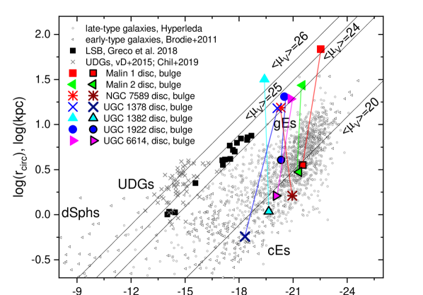
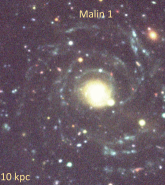
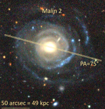
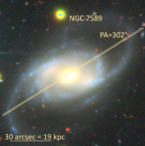
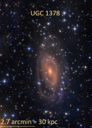
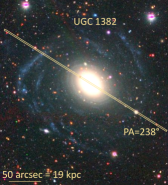
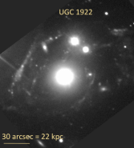
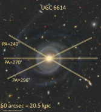
تتضمن عينتنا سبعة أجرام. لمقارنتها بالمجرات المعروفة ذات السطوع العالي والمنخفض السطح، نعرضها في مخطط الحجم-اللمعان (انظر الشكل 1، الرموز الملونة) الذي يعرض نصف قطر فعال دائري11 1 نحسب نصف قطر فعال دائري كما يلي Greco et al. (2018) كـ ، حيث عبارة عن شكل بيضاوي و هو نصف قطر نصف ضوء مُقاس. مقابل الحجم المطلق للنطاق. في بعض الحالات قمنا بتحويل نطاق تدفقات وألوان المتاحة إلى نطاق باستخدام التحويلات من Jester et al. (2005). نعرض الانتفاخات وأقراص gLSB بشكل منفصل. تظهر الأولى بخطوط سوداء وألوان داكنة. تتوافق الخطوط السوداء مع متوسط السطوع السطحي الثابت. قمنا أيضًا برسم مجرات LSB ممتدة أصغر قليلاً (مربعات سوداء، Greco et al., 2018); المجرات فائقة الانتشار (صلبان صغيرة، van Dokkum et al., 2015; Chilingarian et al., 2019)، عدة عائلات من المجرات من النوع المبكر (Brodie et al., 2011, مثلثات صغيرة); المجرات ذات الأنواع المورفولوجية الأحدث من 2 (أي الأقراص) من قاعدة بيانات Hyperleda (دوائر صغيرة). من عينة Greco et al. (2018)، أخذنا فقط الأجرام ذات الانزياحات الطيفية الحمراء المتاحة.
من الشكل 1، من الواضح أن أقراص LSB من gLSBGs لها متوسط سطوع سطحي مماثل لـ LSBs مما يوسع موضعها إلى لمعان أعلى وأيضًا بالنسبة إلى لمعان معين فهي أكثر تمددًا مقارنة بالمجرات المتأخرة "العادية" من Hyperleda. وفي الوقت نفسه، تشبه انتفاخات gLSBG تلك الموجودة في المجرات المبكرة والمتأخرة من النوع HSB.
Malin 1 هو النموذج الأولي لفئة gLSBG التي اكتشفها Bothun et al. (1987). على غرار معظم gLSBGs، فهي تحتوي على انتفاخ بارز وأذرع حلزونية ممتدة باهتة. يُظهر علامات وجود نواة مجرة نشطة (AGN) تقع على الخط الحدودي لتصنيف LINER–Seyfert حسب نسب خط الانبعاث (Junais et al., 2020). كشفت الصور العميقة للمجرة عن الأذرع الحلزونية ذات السطوع المنخفض الواضحة (Galaz et al., 2015; Boissier et al., 2016) بينما يشبه الجزء المركزي مجرة حلزونية من النوع المبكر "العادية" (SB0/a) مع انتفاخ وقرص HSB (Barth, 2007; Saha et al., 2021). قدم Reshetnikov et al. (2010) دليلًا طيفيًا على أن Malin 1 يتفاعل مع الرفيق الصغير Malin 1B. وخلصوا إلى أن التفاعل يمكن أن يؤدي إلى ظهور ذراع حلزونية واحدة مغبرة LSB في Malin 1. البيئة واسعة النطاق لـ Malin 1 منخفضة الكثافة. استنادًا إلى الصور متعددة النطاقات لـ Malin 1، خلص Boissier et al. (2016) إلى أن قرصها الممتد يكوّن نجوماً بكفاءة منخفضة في تكوين النجوم منذ عدة Gyr.
تمت دراسة Malin 2 جيدًا نسبيًا منذ اكتشافه بواسطة Bothun et al. (1990). لها انتفاخ بارز وقرص gLSB ذو هيكل حلزوني. وفقًا لـ Ramya et al. (2011) Malin 2 يُظهر نشاط AGN. يبدو أن الكتلة المقدرة للثقب الأسود المركزي، (Ramya et al., 2011)، أقل من المتوقع بالنسبة لتشتت السرعة النجمية المرصودة. ومع ذلك، تم تحليل مقطع الخط H باستخدام التقنية المقدمة في Chilingarian et al. (2018) لا يكشف عن مكون عريض ومن ثم التشكيك في تقدير كتلة الثقب الأسود من Ramya et al. (2011). كشف Das et al. (2010) عن وجود غاز جزيئي ممتد في قرص Malin 2 بكتلة تتراوح بين إلى . إن النسبة المرصودة للكثافة السطحية الجزيئية إلى كثافة سطح الهيدروجين الذرية أعلى بكثير من تلك المتوقعة في المجرات العادية بالنسبة للقيمة المنخفضة الملحوظة لضغط الغاز المضطرب وكثافة الغاز الإجمالية. وفقًا لـ Kasparova et al. (2014)، أحد التفسيرات المحتملة لهذا الخلل هو المحتوى العالي للغاز البارد غير المكتشف (الغاز الداكن) في Malin 2. حقيقة أن Malin 2 ساطع في NUV تشير إلى تكوين النجوم المستمر في النظام. تقدير SFR بناءً على تدفق NUV هو 4.3 yr-1 (Boissier et al., 2008). Kasparova et al. (2014) يعطي أيضًا قياس كثافة سطح SFR في قرص Malin 2 yr-1kpc-2 استنادًا إلى بيانات GALEX الأرشيفية.
تم ذكر NGC 7589 لأول مرة بواسطة Sprayberry et al. (1995). تحتوي هذه المجرة على أذرع حلزونية وقضيبين وحلقة. وفقًا لـ Lelli et al. (2010)، NGC 7589 يتكون من جزء مركزي HSB وقرص gLSB. يُظهر منحنى الدوران Hi المتوفر هضبة عند حوالي 200 km s-1 من نصف قطر 5.9 kpc، لا توجد بيانات Hi في الجزء الداخلي (Lelli et al., 2010).
NGC 7589 هي مجرة من نوع Seyfert 1 وتقدر كتلة الثقب الأسود المركزي بـ (Subramanian et al., 2016). الحد الأعلى لكتلة الهيدروجين الجزيئي هو ، وهو ما يتوافق مع النسبة المنخفضة للهيدروجين الجزيئي إلى الذري لـ 0.081 (Cao et al., 2017). ومع ذلك، فإن معدل SFR الكلي ليس منخفضًا جدًا: 1.00 yr-1 (المستنتج من تدفق NUV Cao et al., 2017) أو 0.73 و 1.14 yr-1 (المحدد من لمعاني الأشعة فوق البنفسجية البعيدة (FUV) والقريبة (NUV) بواسطة Boissier et al., 2008).
تم تصنيف UGC 1378 على أنها مجرة gLSB بواسطة Schombert (1998). Saburova et al. (2019) درسها بالتفصيل باستخدام الملاحظات الطيفية ذات الشق الطويل والقياس الضوئي البصري العميق متعدد النطاقات. على غرار Malin 1، فهو يحتوي على مورفولوجيا معقدة تشتمل على جزء مركزي بحجم درب التبانة مع انتفاخ وقضيب وقرص HSB مغمور في قرص كبير منخفض السطوع. يتراوح معدل SFR العالمي المستند إلى بيانات الأشعة تحت الحمراء بين 1.2 و 2.3 yr-1 (Saburova et al., 2019). وفي الوقت نفسه، يبدو أن كثافة سطح SFR للقرص LSB أقل من المتوقع بالنسبة لكثافة سطح الغاز المحددة، والتي يمكن أن تشير إلى وجود تراكم. لم يُكشف أي انبعاث CO(1-0) من قرص هذه المجرة.
تم تصنيف UGC 1382 بشكل خاطئ على أنها مجرة إهليلجية قبل أن تلاحظ Hagen et al. (2016) أن لديها بنية حلزونية ممتدة مرئية في صور الأشعة فوق البنفسجية التي تم الحصول عليها بواسطة Galaxy Evolution Explorer (GALEX, Martin et al., 2005). كشف التحليل الإضافي لبيانات الأطوال الموجية المتعددة أنه يبدو أنه gLSB مع قرص HSB منتفخ + محاط بقرص gLSB. SFR العالمي لـ UGC 1382 هو 0.42 yr-1 وكثافة سطح SFR تبلغ UGC 1382 يشبه تلك الموجودة في المناطق الخارجية للمجرات الحلزونية والتي تعتبر نموذجية لانخفاض كفاءة تكوين النجوم (Hagen et al., 2016). UGC 1382 تعيش في بيئة منخفضة الكثافة، وفي نفس الوقت اكتشف Hagen et al. (2016) أيضًا بقايا محتملة لتابع مدمج في قرص LSB الخاص به.
تم تصنيف UGC 1922 بشكل خاطئ على أنها مجرة إهليلجية أيضًا (انظر، على سبيل المثال Huchra et al., 2012). مما يجعل هذه الأنظمة متشابهة. Schombert (1998) كشف عن قرص gLSB الممتد بداخله. أجرى Saburova et al. (2018) عمليات رصد ضوئية وعميقة للشق الطويل لهذه المجرة واكتشف وجود مكون مركزي منفصل حركيًا، والذي يدور بشكل معاكس بالنسبة للقرص الرئيسي للمجرة. كشف القياس الضوئي العميق لـ UGC 1922 عن بنية حلزونية غير متماثلة مع "صفوف" وتكوين نجوم غير منتظم على الجانب الشمالي الغربي. يبدو أن القرص محموم ديناميكيًا بقوة. على عكس العديد من مجرات gLSB الأخرى UGC 1922 ليست معزولة ولكنها عضو في مجموعة تضم سبعة أعضاء (Saulder et al., 2016).
تمت دراسة UGC 6614 في البداية بواسطة Schommer and Bothun (1983). لها انتفاخ بارز، وأذرع حلزونية، وحلقة. مثل NGC 7589، فهو يحتوي على AGN ويمكن تصنيفه كـ LINER (Subramanian et al., 2016). نواة UGC 6614 مشرقة في الأشعة السينية والترددات الضوئية والراديوية. يمكن أن تكون السعة الكبيرة والمقياس الزمني القصير لتقلب الأشعة السينية لـ UGC 6614 مؤشرًا على تراكم مكثف نشط على الثقب الأسود المركزي (Naik et al., 2010). تقدير كتلة الثقب الأسود المركزي هو ، والذي يبدو أنه أقل من المتوقع بالنسبة لتشتت السرعة النجمية المرصودة بشكل مشابه لتلك الموجودة في Malin 2، مما قد يشير إلى أنه ليس في تطور مشترك مع انتفاخ المجرة المضيفة (Subramanian et al., 2016). كُشف انبعاث CO(1-0) من قرص UGC 6614، ويتتبع الغاز الجزيئي أذرعه الحلزونية (Das et al., 2006). التقدير المقابل لكتلة الغاز الجزيئي في القرص هو . إن SFR المحدد من انبعاث الأشعة تحت الحمراء هو 0.88 yr-1 (Rahman et al., 2007). لقد حصلنا على القيمة الأعلى لـ SFR العالمي استنادًا إلى بيانات GALEX FUV وعلاقة SFR مقابل UV - اللمعان من Kennicutt (1998): 2.24 yr-1 و 1.44 لمناطق LSB الطرفية. تقدير SFR العالمي الخاص بنا أعلى أيضًا من ذلك المشتق بواسطة Wyder et al. (2009) من بيانات NUV (1.95 yr-1). لون mag لـ UGC 6614 أعلى مما يتم ملاحظته عادةً في المجرات LSB وفقًا لـ Wyder et al. (2009). جنبًا إلى جنب مع قيمة منخفضة نسبيًا لكثافة سطح SFR البالغة yr-1kpc-2 (Wyder et al., 2009), yr-1kpc-2 (العمل الحالي)، يمكن أن يدل اللون الأحمر إلى عدم وجود كميات كبيرة من النجوم الأصغر سنًا من 108 عامًا. UGC 6614 تحتوي على كمية ملحوظة من الغبار: ، نسبة كتلة الغبار إلى الغاز هي 0.01 (Rahman et al., 2007) وهي أعلى بعشر مرات من القيمة النموذجية في المجرات الحلزونية (Bettoni et al., 2003). هناك تفصيل آخر مثير للاهتمام تمت ملاحظته في UGC 6614 وهو انبعاث الغاز المؤين ذو الانزياح الأزرق في H والذي يمكن أن يشير إلى وجود نفاثة أو نقطة ساخنة لقرص التراكم على طول خط الرؤية (Ramya et al., 2011).
| Galaxy | RA | Dec |
|---|---|---|
| Malin 1 | 12h36m59s.350 | +14d19m49s.32 |
| Malin 2 | 10h39m52s.483 | +20d50m49s.36 |
| NGC 7589 | 23h18m15s.668 | +00d15m40s.19 |
| UGC 1378 | 01h56m19s.24 | +73d16m58s.0 |
| UGC 1382 | 01h54m41s.042 | –00d08m36s.03 |
| UGC 1922 | 02h27m45s.930 | +28d12m31s.83 |
| UGC 6614 | 11h39m14s.872 | +17d08m37s.21 |
| a https://ned.ipac.caltech.edu/ | ||
| Galaxy | T | D | PA | v | AGN | SFR | |||||
| kpc | Mpc | (∘) | (∘) | (km s-1) | (kpc) | flag | (yr-1) | ||||
| Malin 1 | 1302 | SBab3 | 6.7 | 377 | 38 | 10-604 | 236 | 11 | L13 | 3.63 13 | 1.2–2.514 |
| Malin 2 | 826 | Scd3 | 3.60.47 | 2018 | 387 | 75 | 3207 | 33 | S215 | 0.29 16 | 4.314 |
| NGC 7589 | 564 | SABa3 | 1.5 | 130 | 58 | 302 | 205 | 18 | S13 | 9.44 13 | 0.7–1.114 |
| UGC 1378 | 509 | SBa3 | 1.2 | 38.810 | 59 | 181 | 282 | 15 | – | – | 1.2–2.39 |
| UGC 1382 | 8011 | S011 | 1.7 | 8011 | 4611 | 58c | 280 | 13 | L19 | – | 0.42 11 |
| UGC 1922 | 8412 | S?1 | 3.2 | 15010 | 51 | 128 | 432 | 18 | L16 | 0.39 16 | 2.218 |
| UGC 6614 | 547 | Sa3 | 2.5 | 857 | 35 | 296 | 228 | 16 | L13 | 4.44 13 | 0.917–2.2418 |
| Reference – 1 NED, 2 Boissier et al. (2016),3 Hyperleda, 4 Lelli et al. (2010), 5 Moore and Parker (2006), 6 Kasparova et al. (2014), 7 Pickering et al. (1997), | |||||||||||
| 8 Das et al. (2010), 9 Saburova et al. (2019), 10 Mishra et al. (2017), 11 Hagen et al. (2016), 12 Saburova (2018), 13 Subramanian et al. (2016), | |||||||||||
| 14 Boissier et al. (2008), 15 Schombert (1998), 16 Ramya et al. (2011), 17 Rahman et al. (2007), 18 current paper, 19 Chilingarian et al. (2017). | |||||||||||
| b HyperLeda database (Makarov et al., 2014): http://leda.univ-lyon1.fr/ | |||||||||||
| c according to Fig. 3 in (Hagen et al., 2016) | |||||||||||
3 البيانات الطيفية والضوئية
3.1 الملاحظات الطيفية وتقليل البيانات
3.1.1 الرصد بالتلسكوب الروسي ذي 6-m
نقدم هنا ملاحظات طيفية طويلة الشق لأربعة gLSBGs تم إجراؤها باستخدام مطياف SCORPIO العالمي (Afanasiev and Moiseev, 2005) في التركيز الرئيسي لتلسكوب 6-m BTA الروسي. نقدم سجل الرصد في الجدول 3، والذي يحتوي على زاوية موضع الشق وتاريخ الرصد وزمن التكامل الكلي وجودة رؤية الغلاف الجوي. استخدمنا محزوز VPHG2300G الهولوغرافي ذي الطور الحجمي، الذي يوفّر قدرة تحليل طيفية (عرضًا كاملًا عند نصف القيمة العظمى Å) ضمن مجال الأطوال الموجية Å وبعيّنة قدرها 0.38 Å pixel-1. مقياس اللوحة على امتداد الشق البالغ طوله 6 دقيقة قوسية وعرضه 1 ثانية قوسية هو 0.36 ثانية قوسية لكل بكسل-1. في الشكل 2، نعرض صورًا مباشرة لـ gLSBGs الداخلة في عينتنا. وبالنسبة إلى المجرات الأربع ذات الأرصاد طويلة الشق الجديدة المعروضة هنا (Malin 2 وUGC 6614 وNGC 7589 وUGC 1382)، نرسم أيضًا مواضع الشقوق فوق الصور.
تم وصف تقليل البيانات الطيفية لـ SCORPIO باستخدام خط الأنابيب المستند إلى idl بالتفصيل في Saburova et al. (2018). يتضمن طرح التحيز وتقطيع المسح الزائد، وتصحيح المجال المسطح، ومعايرة الطول الموجي باستخدام خطوط القوس22 2 لتحسين دقة حل الطول الموجي، أخذنا أطياف القوس كل 2 h واستخدمناها لتقليل الإطارات العلمية المقابلة.، وإزالة ضربات الأشعة الكونية، والخطية، والإضافة المشتركة؛ طرح سماء الليل باستخدام الخوارزمية الموضحة في Katkov and Chilingarian (2011) ومعايرة التدفق باستخدام النجوم القياسية الطيفية Feige 34, BD 33+2642, Feige 110.
لقد أخذنا في الاعتبار وظيفة انتشار الخط الفعالة لمرسم الطيف على طول الشق وعبر نطاق الطول الموجي، والتي حددناها من خلال تركيب طيف سماء الشفق الذي تم رصده خلال نفس الليلة باستخدام الطيف الشمسي باستخدام تقنية تركيب الطيف الكامل ppxf (Cappellari and Emsellem, 2004). قمنا بعد ذلك بتركيب أطياف المجرات باستخدام نماذج متوسطة الدقة () PEGASE.HR (Le Borgne et al., 2004) نماذج السكان النجمية البسيطة (SSP) المحسوبة لدالة الكتلة الأولية لسالبيتر (IMF) (Salpeter, 1955) المتداخلة مع دالة انتشار الخط الآلية لـ SCORPIO باستخدام nbursts تقنية التركيب الطيفي الكامل (Chilingarian et al., 2007a, b). نتيجة لهذا الإجراء، حصلنا على أفضل المعلمات الملائمة لنموذج SSP، أي العمر T (Gyr) والمعدنية [Fe/H] (dex) للمجموعات النجمية. تم تحديد توزيع السرعة على خط البصر (LOSVD) للنجوم بواسطة دالة Gauss–Hermite حتى الترتيب الرابع (انظر van der Marel and Franx, 1993). تتميز LOSVDs الناتجة بالسرعة على خط البصر وتشتت السرعة ولحظات Gauss-Hermite و، والتي تعكس انحراف LOSVD عن المظهر الجانبي الغوسي النقي.
قمنا أيضًا بتحليل أطياف الانبعاث التي حصلنا عليها من خلال طرح أفضل قوالب السكان النجمية من الأطياف المرصودة. قمنا بتركيب خطوط الانبعاث من خلال مقطع غوسي واحد واشتقنا سرعة وسرعة تشتت الغاز المتأين مع الأخذ في الاعتبار أيضًا وظيفة انتشار الخط الآلي.
| Galaxy | Slit PA | Date | Exposure time | Seeing |
|---|---|---|---|---|
| (∘) | (s) | (arcsec) | ||
| Malin 2 | 75 | 13.03.2018 | 10800 | 1.3 |
| NGC 7589 | 302 | 21.09.2017 | 7200 | 1.4 |
| UGC 1382 | 238 | 07.10.2016 | 7200 | 1.5 |
| UGC 6614 | 296 | 15.03.2018 | 9000 | 2.0 |
3.1.2 أرصاد Gemini-North
بالنسبة لـ UGC 6614، وجدنا أيضًا بيانات طيفية عميقة في أرشيف علوم Gemini33 3 http://archive.gemini.edu/. تمت ملاحظة المجرة في برنامجين مختلفين باستخدام مطياف GMOS-N الذي يتم تشغيله في تلسكوب 8-m Gemini-North (برامج GN-2006B-Q-41، P.I.: C. أونكين و GN-2005B-Q-61، P.I.: L. فيراريس). ترد تفاصيل عمليات رصد GMOS-N في الجدول 4 حيث ندرج زوايا موضع الشق وتواريخ المراقبة ووقت التكامل الإجمالي وعرض الشق والشبكات ونطاق الطول الموجي والاستبانة الطيفية لكل مجموعة بيانات.
استخدمنا خط أنابيب تقليل البيانات المستند إلى idl الخاص بنا لبيانات GMOS المقدمة في (Francis et al., 2012). كان تقليل بيانات عمليات رصد GMOS-N التي تم الحصول عليها في إطار البرنامج GN-2006B-Q-41 مطابقًا لتلك الخاصة بـ Malin 2 المقدمة في Kasparova et al. (2014). تم تقليل البيانات لبيانات B1200 ذات الدقة المتوسطة من البرنامج GN-2005B-Q-61 بطريقة مماثلة. لقد قمنا بتحديث خط أنابيب تقليل البيانات الخاص بنا للتعامل مع بيانات R400 ذات الدقة المنخفضة، والتي تبين أنها مفيدة جدًا لتتبع انبعاث H الخافت في قرص LSB الخاص UGC 6614. لسوء الحظ، بسبب فجوات الرقائق في GMOS-N ونطاقات الطول الموجي المختلفة قليلاً المستخدمة في البرنامجين، مجموعة البيانات B1200 من GN-2006B-Q-41 كان H مفقودًا، و مجموعة البيانات B1200 من GN-2005B-Q-61 بها [Oiii] مفقودة.
قمنا بتحليل بيانات GMOS-N باستخدام nbursts بطريقة مشابهة لملاحظات SCORPIO الموضحة أعلاه.
| Program ID | Slit PA | Date | Exposure time | Slit width | Grating | Wavelength range | Spectral resolution |
|---|---|---|---|---|---|---|---|
| (∘) | (s) | (arcsec) | Å | ||||
| GN-2006B-Q-41 | 240 | 24.01.2007 | 5400 | 0.5 | B1200+G5301 | 4672–6071 | 3400 |
| GN-2005B-Q-61 | 270 | 26.12.2005 | 13200 | 0.75 | B1200+G5301 | 4476–5800 | 2800 |
| GN-2005B-Q-61 | 270 | 29.11.2005 | 4800 | 0.75 | R400+G5305 | 3900–7864 | 800 |
3.2 نتائج تحليل البيانات الطيفية.
في الشكل 3، نعرض النتائج الرئيسية لتحليل البيانات الطيفية لـ Malin 2. يتوافق العمود الأيسر مع مقاطع السرعة وتشتت السرعة للغاز المتأين (الخطوط المظللة) والنجوم (الدوائر). يُظهر العمود المركزي عمر ومعدنية السكان النجميين. يقدم العمود الأيمن مقاطع و لـ LOSVD النجمي. لا تظهر النجوم دورانًا واضحًا في المنطقة الداخلية.
اتجاه المعدن النجمي قريب جدًا من ذلك الذي اكتشفه Kasparova et al. (2014) – التدرج الشعاعي المتناقص من المعدن الشمسي تقريبًا في المركز. عمر التجمعات النجمية قديم جدًا في منطقة الانتفاخ. قيم و قريبة من الصفر.
في الشكل 4، نعرض نتائج تحليل البيانات الخاصة بنا لـ NGC 7589. التسميات هي نفسها كما في الشكل. 3. كما يمكن للمرء أن يرى في الشكل 4، فإن حركيات الغاز المتأين لـ NGC 7589 معقدة للغاية: سرعة التشتت المقاسة من الخط [O iii] ترتفع مع المسافة من المركز، وهو ما لا يظهر في H. إنه يؤدي إلى سرعة أقل وتدرج سرعة أقل لـ [O iii] مقارنة بتلك المشتقة من H. من المحتمل أن يحدث هذا بسبب وجود AGN في NGC 7589 (انظر القسم 2). يبدو أن عمر النجم أصغر بالنسبة للجزء الأعمق منه في نصف القطر الأكبر. ويمكن أن تكون هذه والقيم غير الصفرية لـ و إشارة غير مباشرة للقرص النووي في المجرة.
في الشكل 5، نقدم نتائج UGC 1382. يدور عداد المكون الغازي بالنسبة للنجوم في جميع أنصاف الأقطار. يدور الغاز المتأين مع القرص Hi الممتد إذا قارنا ملفنا الشخصي بخريطة السرعة Hi المقدمة في Hagen et al. (2016). النجوم الموجودة في المركز قديمة جدًا وتظهر زيادة كبيرة في المعدن. إن عمر التجمعات النجمية للجزء HSB من المجرة الذي حصلنا عليه في الدراسة الحالية أعلى بكثير من ذلك المشتق بواسطة Hagen et al. (2016) من تركيب SED والذي من المحتمل أن يكون سببه وجود جزء صغير من النجوم الشابة التي تؤثر بشدة على الجزء الأزرق من SED. القيمة قريبة من الصفر، في نفس الوقت تقريبًا 0.1 مما قد يشير إلى وجود مكون نجمي منفصل حركيًا.
يُظهر الشكل 6 الخصائص الحركية والمجموعات النجمية لعمليات رصد GMOS-N وSCORPIO لـ UGC 6614. الحركية في المنطقة الداخلية لـ UGC 6614 معقدة جدًا أيضًا. تختلف حركة الغاز المتأين عن حركة النجوم. في المنطقة الداخلية ( arcsec)، لا يدور الغاز المتأين أو حتى تظهر عليه علامات الدوران المعاكس. على النقيض من UGC 1922، تكون السرعات المقلوبة مرئية هنا فقط لزاوية موضع واحدة وتتركز في المنطقة الأعمق على عكس UGC 1382 حيث يكون الدوران المضاد للغاز عالميًا. ومن ثم، ربما تتبع هذه الميزة تدفق الغاز الناتج عن AGN والذي لاحظه Ramya et al. (2011) بدلاً من المكون النووي المنفصل حركيًا. ومع ذلك، هناك حاجة إلى مجال سرعة ثنائي الأبعاد عالي الدقة لاستخلاص نتيجة قاطعة. يختلف تشتت السرعة المقاس من الخط [O iii] عن ذلك الموجود في H، على غرار NGC 7589، حيث يمكن أن يؤثر AGN أيضًا على الحركية.
خصوصية أخرى لملف سرعة LOS للغاز المتأين هي انخفاض السرعة على كلا الجانبين من المركز عند نصف قطر 30 arcsec، بالقرب من الحلقة المضيئة الداخلية للمجرة. يتجلى هذا الانخفاض أيضًا في مقطع سرعة النجوم. إن تغير تدرج السرعة يشبه ذلك الذي يتم ملاحظته غالبًا في المجرات ذات الأشرطة (انظر، على سبيل المثال Saburova et al., 2017, والمراجع الواردة فيها). من الممكن أن تكون الحلقة التي نراها في UGC 6614 هي حلقة رنانة. يمكن أن تكون حلقة بيضاوية بيضاوية الشكل تحدث فيها خطوط انسيابية بيضاوية الشكل وتظهر حركات غير دائرية نفسها في انخفاض سرعة LOS. من المحتمل أنه كان هناك شريط ضعيف في UGC 6614 من قبل، مما ساعد في تراكم المواد في الحلقة.
حصل McGaugh et al. (2001) أيضًا على مقطع سرعة خط البصر للغاز المتأين في UGC 6614 في خط H من أرصاد طويلة الشق عند . وفي الجزء الداخلي من مقاطعهم يمكن رؤية إشارة إلى تغير تدرج السرعة. ويتفق منحنى الدوران المستخلص في الدراسة الحالية جيدًا مع بياناتهم، إذ يُظهر سعة سرعة دوران قدرها km s-1وحدًا أدنى عند 10 kpc (انظر الشكل 6).
إن التجمعات النجمية في انتفاخ UGC 6614 قديمة وغنية بالمعادن. ويتناقص عمر النجوم بازدياد البعد عن المركز، ويبدو أنه يبلغ نحو 2–3 Gyr خارج المنطقة التي يهيمن فيها الانتفاخ على اللمعان. وتبلغ فلزية النجوم عند هذا نصف القطر تقريبًا dex. قيم و ليست صفرًا، وعلى وجه الخصوص ترتبط بالسرعة و لديه حد أدنى في المركز، والذي يتم ملاحظته عادةً في المجرات المحظورة (انظر، على سبيل المثال Saburova et al., 2017, والمراجع الواردة فيه).
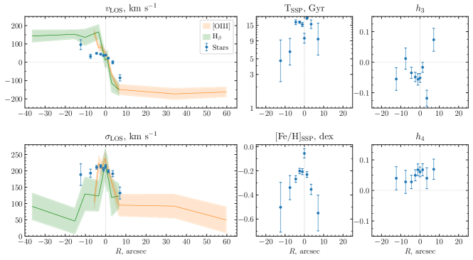
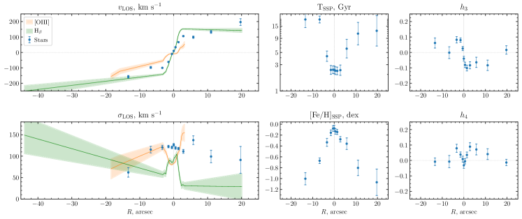
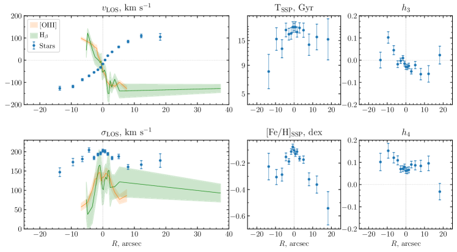
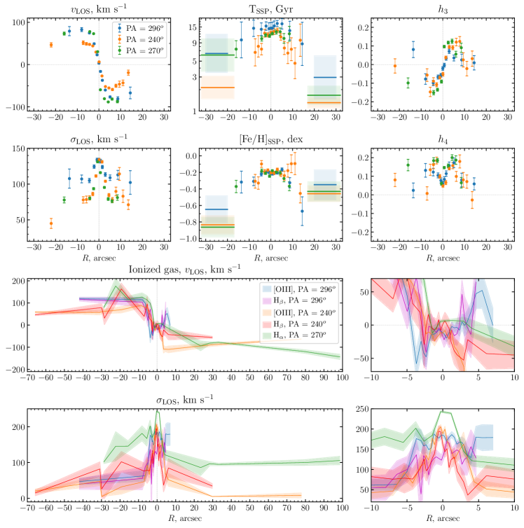
3.3 قياس الضوء السطحي لـ NGC 7589 و UGC 6614
لتقدير المعلمات الهيكلية لـ NGC 7589 وUGC 6614، أجرينا قياس الضوء السطحي لهما. لقد حصلنا على البيانات المتاحة للعامة من المسح الاستراتيجي Subaru HyperSuprimeCam DR2 لـ NGC 7589 وZwicky Transient Facility (ZTF) (Bellm et al., 2019) مسح لـ UGC 6614، وكلاهما في النطاق r. أجرينا تحليل الأيزوفوت باستخدام المهمة ellipse في مكتبة PHOTUTILS python. ثم وجدنا نموذجًا مناسبًا متعدد المكونات عن طريق تقليل إحصائيات للعديد من مقاطع الإضاءة. خلال هذا الإجراء، قمنا بدمج نموذجنا مع PSF، الذي اشتقناه عن طريق تركيب النجوم غير المشبعة في نفس الصورة.
NGC 7589 لها شكل معقد في المنتصف يتضمن شريطين وحلقة. لقد استبعدنا 17 arcsec المركزي من تحليلنا وقمنا بتركيب الجزء الخارجي فقط من مقطع الضوء بواسطة مكون Sersic وقرص أسي. \textcolorblackكما نوضح أدناه، فإن إخفاء الجزء المركزي من المقطع له تأثير ضئيل على معلمات هالة DM (وهذا هو الهدف الرئيسي لهذا النهج).
UGC 6614 يمتد عبر حقلين متجاورين في ZTF، ولذلك جمعناهما في فسيفساء واحدة باستخدام البرنامج swarp (Bertin, 2010). وعلى خلاف صور ZTF، تحتوي الصور في مسوح أخرى مثل SDSS أو Legacy Survey، حيث تكون الدقة المكانية أفضل بكثير، على آثار قرب الأجرام الساطعة تنتج عادة عن خوارزمية طرح خلفية السماء المحلية. وفي حالة UGC 6614 تمنع هذه الآثار تفكيكًا دقيقًا لمقطع الضوء يتضمن قرص LSB، ولذلك قررنا استخدام بيانات ZTF الأقل عمقًا بكثير وغير المتأثرة بالطرح الزائد للسماء. ولائمنا مقطع UGC 6614 بمكونين من نوع Sersic. ومن المعروف أن تفكيك مقطع الضوء متعدد المكونات أحادي البعد غير مستقر بالنسبة إلى الخلفية المضافة في الصورة الأصلية، كما يتطلب تخمينًا ابتدائيًا مضبوطًا إلى حد ما (انظر مثلًا Chilingarian et al., 2009a)، ولذلك فمن الضروري استخدام بيانات ذات خلفية سماء مطروحة بدقة.
نعرض نتائج تفكيك المقاطع إلى مكوّن داخلي ومكوّن قرصي LSB لكل من NGC 7589 وUGC 6614 في الشكلين 7 و 8. وترد معلمات أقراص LSB والمكونات الداخلية في الجدول 5 لكلتا المجرتين.44 4 \textcolorblackحاولنا أيضًا استخدام نموذج يتضمن مكوّنًا داخليًا من نوع Sersic وقرصًا أسيًا خارجيًا لـ UGC 6614، إلا أن النموذج ذي مكوّني Sersic أعطى جودة ملاءمة أفضل. ولا يؤثر انحراف مقطع النموذج عن البيانات المرصودة عند أنصاف الأقطار الكبيرة في التحليل اللاحق، لأن (i) استخدمنا وصفًا غير معلمي لمكوّن القرص الخارجي بوصفه الفرق بين مقطعي السطوع الكلي والانتفاخ في تفكيك منحنى الدوران لـ UGC 6614، و(ii) لا يصل مقطع السرعة الشعاعية إلى أبعد جزء من القرص حيث تصبح الانحرافات كبيرة.
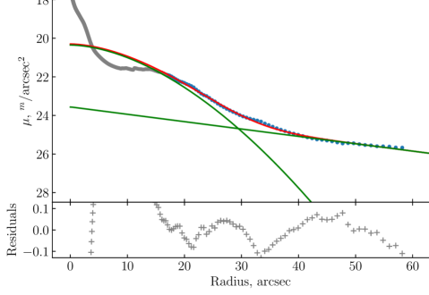
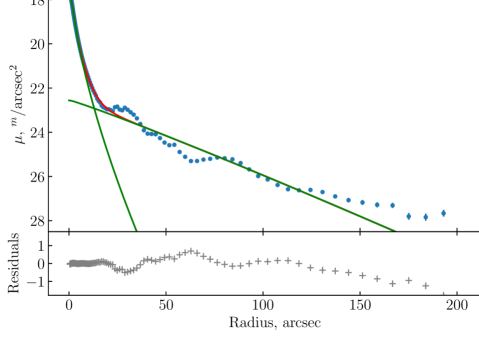
| Galaxy | ||||||
|---|---|---|---|---|---|---|
| mag | arcsec | mag | arcsec | |||
| NGC 7589 | 1 | |||||
| UGC 6614 |
4 النمذجة الديناميكية باستخدام تحليل منحنى الدوران
من المعروف أن هالة المادة المظلمة تلعب دورًا مهمًا في تطور المجرات. هنا، نشتق معلمات هالات المادة المظلمة في gLSBGs لمقارنتها بالمجرات HSB. في الدراسات السابقة لـ gLSBGs، أجرى Pickering et al. (1997); de Blok et al. (2001); Hagen et al. (2016); Lelli et al. (2010); Junais et al. (2020); Di Paolo et al. (2019) أيضًا نمذجة كتلية باستخدام مقاطع مختلفة لهالة المادة المظلمة (Einasto، NFW، Burkert، وشبه متساوي الحرارة) لمجرات مختلفة، وبالتالي لا يمكن إجراء مقارنة مباشرة بين الأجرام. لذلك، نقوم هنا بإجراء تحليل منحنى الدوران باستخدام نفس مقطع هالة المادة المظلمة لجميع المجرات في عينتنا. نقوم بدمج البيانات البصرية المقدمة في هذه الورقة مع بيانات Hi المنشورة، ثم نحلل منحنيات الدوران لـ Malin 2، NGC 7589، UGC 1382، و UGC 6614. اشتققنا منحنيات الدوران البصرية من خطي الانبعاث H و[O iii] بعد تصحيحها للسرعة النظامية، وعكسها تماثليًا حول مركز المجرة، وإزالة الإسقاط عنها باستخدام زاوية الميل الواردة في الجدول 2.55 5 \textcolorblackبالنسبة إلى UGC 6614، لا تقع ثلاثة مقاطع على المحور الرئيسي، وقد أُخذ ذلك في الحسبان؛ انظر أدناه.
في إجراء التحلل، قمنا بتضمين المكونات التالية: قرص نجمي، وانتفاخ، وقرص Hi ، وBurkert (1995) هالة المادة المظلمة.66 6 لقد اخترنا ملف Burkert للمقارنة مع عينة من المجرات العملاقة HSB حيث تم استخدامه من قبل Saburova (2018). استخدمنا كثافات سطح الغاز من ملاحظات Hi المنشورة. تم توضيح تفاصيل إجراء النمذجة الكتلية في Saburova et al. (2016b). \textcolorblackنقدم مواصفات النمذجة الكتلية والنماذج الخاصة بكل مجرة في القسم 4.1.
قمنا بإصلاح مساهمات المكونات النجمية حسب المعلومات اللونية والطيفية. لقد أجرينا أيضًا تحليلًا لمنحنى الدوران المدمج لـ Malin 1 باستخدام البيانات المنشورة. نتائج النمذجة الكتلية لـ UGC 1378 وUGC 1922 مأخوذة من Saburova et al. (2018, 2019).
في الشكل. 9، نرسم معلمات هالات المادة المظلمة مقابل إيزوفوت mag في النطاق لـ gLSBGs، وكذلك مقابل أحجام أقراص gLSB من الجدول 2. نحن أيضًا نرسم معلمات مجرات HSB متوسطة الحجم والعملاقة من Saburova (2018) (النقاط السوداء والمثلثات). تُظهر الخطوط الصلبة متوسط التشغيل لمجرات HSB. من الشكل 9، من الواضح أن gLSBGs تتصرف بشكل مختلف عن مجرات HSB، بعضها يكمن في استمرار العلاقة الأفضل لمجرات HSB، لكن بعضها ينحرف عنها. قد يشير هذا إلى سيناريوهات مختلفة للطبيعة والتكوين لمجموعات gLSBGs المختلفة في عينتنا.
بالنسبة إلى NGC 7589 وMalin 2 وUGC 6614 وUGC 192277 7 من الجدير بالملاحظة أن عدم اليقين في معلمات الهالة لا يرسم استنتاج واضح في \textcolorblackحالتي NGC 7589 وUGC 1922.، تتوافق معلمات الهالات الداكنة بشكل أفضل مع نصف قطر قرص gLSB مقارنة بنصف قطر قرص gLSB . تقع المجرات gLSBG الثلاثة المتبقية بالقرب من مجرات HSB في مخططات نصف القطر البصري. قد يشير ذلك إلى أن معلمات الهالات المظلمة في بعض gLSBGs مرتبطة بأحجام أجزائها HSB، وهو ما يمكن أن يدعم تكوين هذه الأنظمة على مرحلتين. في البداية، يتم تكوين جزء HSB، ثم يحدث تراكم لجزء LSB ممتد. ومن المثير للاهتمام أن جزء HSB من Malin 2 ممتد جدًا أيضًا.
| Galaxy | ||||||||
|---|---|---|---|---|---|---|---|---|
| kpc | Mpc3 | M⊙ | Mpc2 | M⊙ | ||||
| Malin 1 | 19.6 | 6.6 | 78.3 | 25.2 | 13 | |||
| Malin 2 | 52.2 | 3.3 | 164.4 | 6.4 | 31 | |||
| NGC 7589 | 19.6 | 5.9 | 34.3 | – | 1.2 | |||
| UGC 1382 | 16.3 | 28.6 | 157.2 | 9.2 | 5.7 | |||
| UGC 6614 | 32.5 | 4.5 | 59.3 | 13.0 | 1.5 | |||
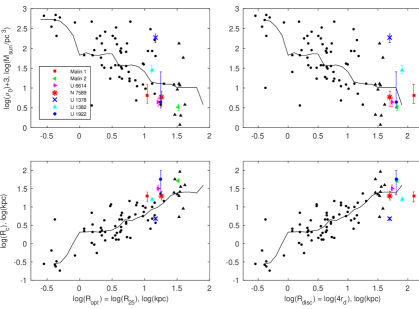
4.1 تفاصيل حول ملاءمة منحنيات الدوران للمجرات الفردية
بالنسبة لـ Malin 1، استخدمنا منحنى الدوران البصري وHi المدمج ومقطع كثافة السطح بالإضافة إلى مقطع سطوع سطح النطاق من Lelli et al. (2010). لقد أخذنا منحنى دوران المحور الرئيسي بصريًا من Junais et al. (2020).88 8 قررنا استخدام المحور الرئيسي فقط لأنه تم التقاطه بأضيق شق لتجنب التحيزات المحتملة بسبب الإضاءة غير المتجانسة للشق وأيضًا لتقليل عدم اليقين بسبب الاتجاه غير المعروف للقرص. استخدمنا تعريفًا غير حدودي لمساهمة القرص في منحنى الدوران. لهذا، حصلنا على معلمات الانتفاخ من تركيب سطوع الضوء باستخدام روتين تقليل المربعات الصغرى غير الخطية Levenberg–Marquardt في idl (Chilingarian et al., 2009a). قمنا بإصلاح نسب الكتلة إلى الضوء إلى 3.0 للقرص وحصرناه في النطاق 2,,6 للانتفاخ الذي يتوافق مع الكثافات المتوافقة مع تلك التي وجدها Boissier et al. (2016). نقدم نتائج تركيب منحنى الدوران في الشكل 10.
يبدو أن تقديرنا للمقياس الشعاعي للهالة المظلمة أعلى من ذلك الذي تم الحصول عليه بواسطة Lelli et al. (2010) ولكن ضمن النطاق الذي قدمه Junais et al. (2020) حتى مع الأخذ في الاعتبار أنهم استخدموا مقاطع المادة المظلمة المتساوية الحرارة الزائفة بدلاً من المقطع لـ بيركرت.
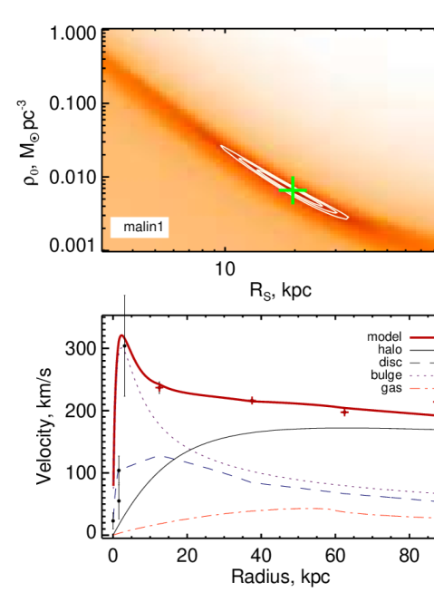
بالنسبة لـ Malin 2، قمنا ببناء غاز متأين مدمج (الدراسة الحالية) ومنحنى دوران Hi (Pickering et al., 1997). نحن نستخدم معلمات الانتفاخ التي تم الحصول عليها في النطاق من مقطع الضوء المنشور في Kasparova et al. (2014) (مؤشر Sersic ، السطوع السطحي المركزي mag arcsec-2، نصف القطر الفعال arcsec)، وتعريف غير معلمي لمقطع كثافة سطح القرص. كانت نسبة الكتلة إلى الضوء لنطاق القرص محدودة في النطاق 1.98,,3.89 وفقًا لتركيب SED (القيمة الأقل) ومعيار استقرار الجاذبية الحدية للقرص المطبق على النجم بيانات تشتت السرعة عند arcsec من Kasparova et al. (2014) بطريقة مشابهة لما تم إجراؤه لـ UGC 1378 (انظر Saburova et al., 2019).
تبلغ القيمة التالية من استقرار الجاذبية الهامشية حوالي ضعف تلك الناتجة عن التركيب الطيفي وSED الذي تم الحصول عليه في Kasparova et al. (2014)، والذي يمكن أن يشير إلى ارتفاع درجة حرارة القرص المعتدل، خاصة إذا أخذنا في الاعتبار عدم اليقين بسبب دالة الكتلة الأولية النجمية. اقتصرت نسبة كتلة الانتفاخ إلى الضوء على 3.33،،5.0 وفقًا لـ Kasparova et al. (2014). تظهر نتائج التحلل في الشكل 11. يمكن للمرء أن يرى أنه بالنسبة لـ Malin 2، يرتفع نموذج منحنى الدوران بشكل حاد جدًا مقارنة بالملاحظات. السبب المحتمل لهذا التناقض هو دقة البيانات الطيفية التي يمكن أن تسهل الارتفاع الحاد لمنحنى الدوران في 2 kpc حيث لوحظ عدم الاتساق (تتوافق جودة الرؤية مع الدقة 1.3 kpc).
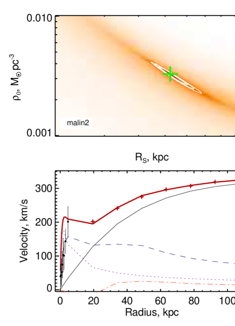
يبدو أن المقياس الشعاعي لهالة المادة المظلمة يتوافق جيدًا مع ذلك الذي تم العثور عليه بواسطة Kasparova et al. (2014) إذا طبق المرء معامل التحويل من شبه متساوي الحرارة إلى ملفات هالة بوركيرت المظلمة من Boyarsky et al. (2009). \textcolorblackنصف القطر الأساسي الذي وجدته Di Paolo et al. (2019) أعلى من ذلك الموجود في الدراسة الحالية.
بالنسبة إلى NGC 7589، أجرينا تحليل مقطع الضوء ذو النطاق r الذي تم الحصول عليه من بيانات SUBARU HSC (Aihara et al., 2019). يُظهر مقطع السطوع السطحي سلوكًا معقدًا في الجزء الداخلي بسبب وجود شريطين، ميني بار نووي بنصف قطر 2.5 arcsec وشريط كبير الحجم ‘عادي’ بنصف قطر 15 arcsec. ولهذا السبب، قمنا بحساب مساهمة المكون الداخلي في منحنى الدوران تقريبًا فقط من خلال اعتباره كتلة النقطة وقمنا بإخفاء الجزء الداخلي من منحنى الدوران أثناء التركيب. تم تقدير الكتلة من سطوع النطاق في الفتحة بنصف قطر 17 قوس ثانية دون مساهمة القرص LSB (). يتم أخذ بيانات Hi من Lelli et al. (2010). تم اشتقاق منحنى الدوران الداخلي في هذه الورقة من الغاز المتأين (H) الكينماتيكا. كانت نسبة الكتلة إلى الضوء للمكون الداخلي محدودة في النطاق أثناء التركيب. تتوافق القيمة المنخفضة مع عدد النجوم التي يبلغ عمرها 4 Gyr والمعدنية الشمسية (انظر الشكل 4) لدالة الكتلة الأولية لكروبا. تأتي القيمة العليا من اللون المنتفخ الذي تم الحصول عليه من صور SDSS ونموذج Roediger and Courteau (2015) - علاقات الألوان. بالنسبة للقرص، اعتبرنا في النطاق 1.32 وفقًا إلى لونه المقدر من صور SDSS وعلاقات النماذج من Roediger and Courteau (2015) وBell et al. (2003). تظهر نتيجة نمذجة منحنى الدوران لـ NGC 7589 في الشكل. 12. \textcolorblackحقيقة أننا قمنا بإخفاء الجزء الداخلي من منحنى التدوير تجعل نتائج النموذج غير مؤكدة. يؤدي هذا إلى عدم اليقين بشأن معلمات الهالة المظلمة بنسبة 50 في المائة (انظر Saburova et al., 2016a).
المقياس الشعاعي للهالة المظلمة أقل من ذلك الذي وجده Di Paolo et al. (2019) ولكنه يتوافق جيدًا مع ذلك الذي حصل عليه Lelli et al. (2010) لهالة داكنة متساوية الحرارة، ومع ذلك، فقد قاموا بتعظيم مساهمة المكون النجمي، وهو ما لم نفعله هنا.
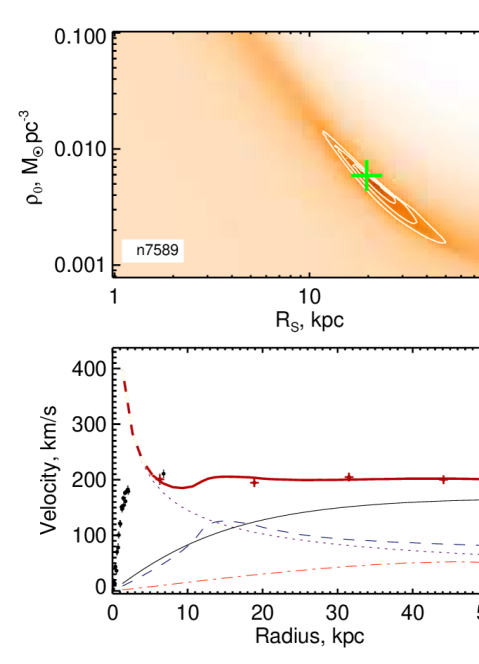
بالنسبة إلى UGC 1382، يدور الغاز المتأين بشكل مشترك مع القرص Hi ، مما سمح لنا ببناء منحنى الدوران المدمج. لقد أخذنا بيانات Hi من Hagen et al. (2016)، والمعلمات الهيكلية للانتفاخ من Hagen et al. (2016)، وتعريف غير معلمي لمقطع كثافة سطح القرص - حصلنا عليه كفرق بين الإجمالي والانتفاخ مقاطع سطوع سطح النطاق. حُدّت نسبة الكتلة إلى الضوء في النطاق للانتفاخ ضمن المجال 3,,5 وفقًا للفلزية النجمية والعمر الكبير 13 Gyr لكل من دالتي الكتلة الأولية النجميتين لدى Kroupa (2001) وSalpeter (1955) (انظر الشكل 5). بالنسبة للقرص فإن الحدود 1.2,,2.66 تأتي من العلاقة بواسطة Roediger and Courteau (2015) ولون للقرص ومن Hagen et al. (2016). نعرض نتائج النمذجة في الشكل 13. أجرى Hagen et al. (2016) أيضًا النمذجة الكتلية لمنحنى الدوران لـ UGC 1382، ومع ذلك، فقد استخدموا مقاطع كثافة الهالة المظلمة Einasto وNFW. يُظهر نموذجهم سلوكًا مشابهًا لنموذجنا، حيث تهيمن المساهمة الباريونية في منحنى الدوران فقط على 10 kpc، بينما تهيمن الهالة المظلمة على نصف القطر الأكبر.
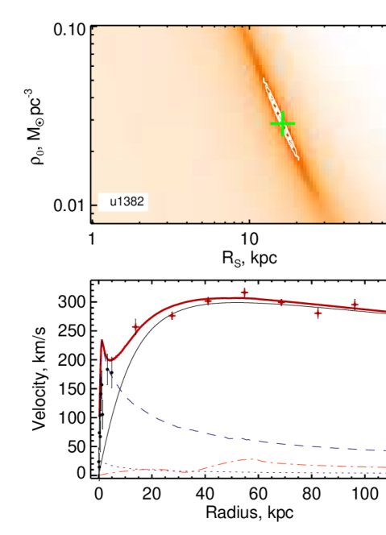
بالنسبة لـ UGC 6614 نظرًا لحركيات الغاز المعقدة في المنطقة الداخلية، فقد استبعدنا النقاط الأعمق (R kpc) من تحليلنا. قمنا بحساب منحنى دوران الغاز المتأين من القطعتين الطيفيتين () بناءً على القياسات في خطوط الانبعاث Hα و[Oiii]. قمنا بتقدير السرعة الدائرية من السرعة على خط البصر المرصودة والإحداثيات الشعاعية مع الأخذ في الاعتبار ميل القرص والزاوية بين ناقل نصف القطر لنقطة معينة والمحور الرئيسي للمجرة : \textcolorblack; . \textcolorblackهنا، هو نصف القطر في مستوى السماء، هو السرعة على خط البصر المصححة للسرعة النظامية، هو ميل القرص. لقد اعتمدنا الميل وفقًا لـ Pickering et al. (1997). الوضع مع زاوية الموضع أكثر تعقيدًا نظرًا لأن القيمة لا تتفق مع حركياتنا في المنطقة الداخلية لـ UGC 6614، وبالتالي اعتمدنا للداخلية 35 arcsec، و لنقاط البيانات الخارجية.
أضفنا منحنى دوران الغاز المتأين إلى سرعات Hi من Pickering et al. (1997) وحصلنا على منحنى الدوران المدمج لإجراء التركيب. استخدمنا المعلمات الهيكلية للانتفاخ من تحليلنا لصورة النطاق التي تمت مناقشتها أعلاه من تحليل ZTF. استخدمنا تعريفًا غير معلمي لمقطع القرص كفرق بين مقاطع السطوع السطحي الإجمالي والانتفاخ. كانت نسبة الكتلة إلى الضوء في النطاق محددة ضمن المجال: 2.57,,4.54. وتتوافق القيمة العليا مع تجمع نجمي عمره 12 Gyr وفلزيته عند اعتماد Salpeter IMF، أما القيمة الدنيا فتوافق عمرًا قدره 12 Gyr عند اعتماد دالة الكتلة الأولية لكروبا. تم تقدير نطاق نسبة كتلة القرص إلى الضوء من mag لون القرص و –علاقة اللون من Roediger and Courteau (2015) مع مراعاة العمر 1 Gyr والمعدنية dex في المنطقة خارج سيطرة الانتفاخ: 0.4,,2.3. نقدم نتائج التركيب لـ UGC 6614 في الشكل. 14. كما يمكن أن نرى من الشكل، يتضمن النموذج الجزء HSB المرتبط بمكون الانتفاخ الكاذب والجزء LSB في شكل قرص غير حدودي. يبدو هذا النموذج مشابهًا لنموذج Malin 1 وNGC 7589 الذي تم إنشاؤه بواسطة Lelli et al. (2010).
أجرى de Blok et al. (2001) أيضًا النمذجة الكتلية لـ UGC 6614 باستخدام مقاطع كثافة الهالة المظلمة الزائفة و NFW. بالنسبة للهالة متساوية الحرارة الزائفة، فقد اشتقوا المقياس الشعاعي للهالة المظلمة 12.18 kpc باستخدام نسبة الكتلة إلى الضوء الثابتة للنطاق . 1.4. يبدو أنه يتوافق جيدًا مع المقياس الذي تم الحصول عليه هنا لمقطع Burkert إذا تم تطبيق معاملات التحويل من Boyarsky et al. (2009). حصل Pickering et al. (1997) على مقياس شعاعي هالة داكنة أعلى إلى حد ما يبلغ 24.48 kpc، لكنهم اعتبروا بيانات Hi فقط هي الوحيدة المتاحة في الوقت الحالي.
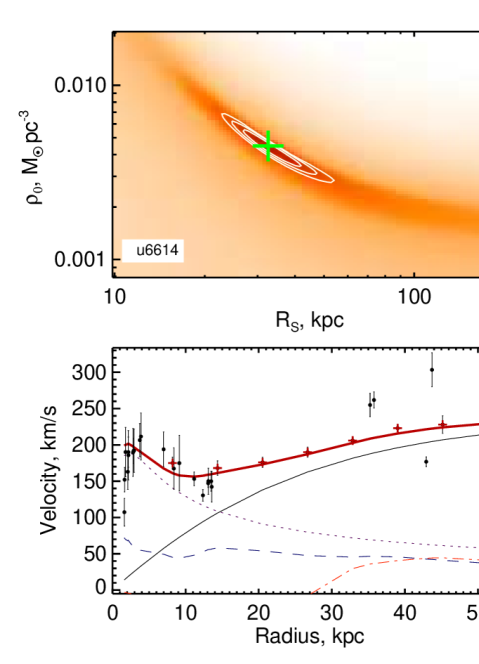
5 علاقات القياس
5.1 علاقة تولي–فيشر الباريونية لـ gLSBGs
تربط علاقة TF الباريونية (1977) (Sprayberry et al., 1995; McGaugh and Schombert, 2015) الكتلة الباريونية الكلية (غاز + نجوم) بالسرعة الدائرية العظمى في المجرة. في الشكل 15، نعرض مجرات gLSBGs السبع في عينتنا مقارنة بأفضل الارتباطات الخطية ملاءمة لعلاقة TF الباريونية في الأدبيات. ويمثل الخط السميك المتصل \textcolorblackوالدوائر المفتوحة والخط السميك المتقطع العلاقتين اللتين حصل عليهما Lelli et al. (2019) (ذات التشتت الأصغر) وPonomareva et al. (2018) (العلاقة النهائية)، على التوالي. وتعطي الخطوط الرفيعة المتصلة والمتقطعة لايقين معاملات الارتباطات الواردة في الأوراق المقابلة. وتُعرض gLSBGs لدينا بالرموز نفسها كما في الشكل 9. حسبنا الكتلة الباريونية بوصفها مجموع كتل القرص النجمي والانتفاخ من الجدول 6، وSaburova (2018); Saburova et al. (2019)، وكتل Hi من الجدول 2. وبالنسبة إلى UGC 1922، قُدرت كتلة القرص من نسبة الكتلة إلى الضوء الضوئية. كما أُخذت السرعات و\textcolorblackأخطاؤها من الجدول 2. \textcolorblackحُسبت أخطاء الكتلة الباريونية بطريقة مشابهة لما في Lelli et al. (2016)، وتشمل أخطاء كتلة الغاز من الجدول 2، ولايقين نسب الكتلة إلى الضوء البالغ 0.11 dex وفقًا لـ McGaugh and Schombert (2014)، ولايقين اللمعان من رتبة 10 في المائة.
كما يمكن للمرء أن يرى في الشكل 15، تحتل gLSBGs الزاوية اليمنى العليا من علاقة TF بسرعات دوران عالية وكتل باريونية كبيرة. يقع معظمها ضمن حالة عدم اليقين بشأن الارتباط الذي وجدته Lelli et al. (2019).
وفقًا لـ Ogle et al. (2019)، تنكسر علاقة TF الباريونية لسرعات دوران أعلى من 340 km s-1، ولكن في عينتنا فقط UGC 1922 يدور بهذه السرعة. تتمتع هذه المجرة بأكبر انحراف عن العلاقة التي وجدها Lelli et al. (2019) في نفس الوقت لا تكون غريبة عن الانحدار الذي وجدته Ponomareva et al. (2018).
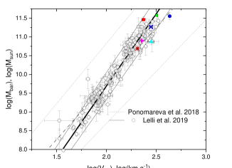
5.2 تكوين النجوم في gLSBGs
بذلت فرق مختلفة جهودًا عديدة لاستكشاف عملية تكوين النجوم في نظام الكثافة المنخفضة (انظر، على سبيل المثال Bigiel et al., 2010; Abramova and Zasov, 2012; Bacchini et al., 2020) لأن الظواهر الفيزيائية الفلكية المختلفة قد تتحكم في تكوين النجوم في المناطق المنخفضة والعالية الكثافة. تمثل الأقراص الممتدة لـ gLSBGs حالة مثيرة للاهتمام بشكل خاص لبيئة منخفضة الكثافة لأنها غالبًا ما تحتوي على مقاطع SFR عالمية كبيرة جدًا موزعة على مساحة هائلة.
نعرض كثافات سطح SFR \textcolorblackالمتكاملة لـ gLSBGs السبعة من عينتنا على علاقة Schmidt-Kennicutt التي تربط بكثافة سطح الغاز في الشكل. 16. بالنسبة لجميع gLSBGs باستثناء Malin 2، نرسم الكثافة السطحية Hi بدلاً من الكثافة السطحية الإجمالية للغاز لأن قياسات الغاز الجزيئي الموثوقة والمحللة مكانيًا لم تكن متاحة لها \textcolorblack ومن المهم أن يتم إجراء قياس كثافة الغاز الجزيئي لنفس المناطق مثل الكثافات Hi وSFR. كما لاحظنا أعلاه أيضًا، فإن التقديرات العليا لكتلة الغاز الجزيئي الموجودة في NGC 7589 وUGC 6614 هي تقريبًا 10 و 100 مرات أقل من كتل Hi ، لذا فإن إدراج الغاز الجزيئي لن يغير موضع gLSBs على مخطط Schmidt-Kennicutt بشكل كبير. \textcolorblackبالنسبة إلى Malin 2، نقدم التقديرات المتكاملة للصناديق مع قياس الغاز الجزيئي المتاح. تم أخذ قيمة من Kasparova et al. (2014) وكثافة سطح الغاز من Das et al. (2010). تُظهر الرموز المختلفة gLSBGs من عينتنا كما هو موضح في وسيلة الإيضاح. \textcolorblackبالنسبة إلى Malin 1، أخذنا كثافة السطح وHi المتكاملة من Wyder et al. (2009) وللمقارنة قمنا أيضًا برسم القيمة المحلية حسب اللون الخافت: عند kpc من المركز مأخوذ من Junais et al. (2020) وكثافة سطح Hi على نفس مسافة مركز المجرة من Lelli et al. (2010). بالنسبة إلى NGC 7589، وUGC 1922، وUGC 6614، قمنا بحساب من بيانات GALEX FUV ورسمها مقابل متوسط كثافة السطح Hi داخل نفس نصف القطر مثل SFR المستند إلى الأشعة فوق البنفسجية. ترد مصادر البيانات الخاصة بكثافات Hi في الجدول 2. بالنسبة إلى UGC 1378، أخذنا التقديرات من Saburova et al. (2019). بالنسبة إلى UGC 1382، قمنا بتقدير متوسط قيم كثافة سطح SFR وHi باستخدام البيانات من Hagen et al. (2016)، وتم تصحيح القيمة السابقة أيضًا لتشمل الهيليوم.
يُظهر خط أسود سميك قانون القوة مع فهرس \textcolorblack1.41 الذي تم العثور عليه للمجرات الحلزونية بواسطة de los Reyes and Kennicutt (2019) بالتوافق مع العمل الكلاسيكي بواسطة Kennicutt (1998). تُظهر الدوائر المفتوحة الباهتة العينة من de los Reyes and Kennicutt (2019). تشير المثلثات الباهتة إلى المجرات LSB بواسطة Wyder et al. (2009). لمقارنة gLSBGs مع المجرات الغنية للغاية بـ Hi، نوضح أيضًا بخط أزرق العلاقة الأكثر ملائمة لكثافة سطح Hi للمجرات من مشروع ‘Bluedisk’ (Roychowdhury et al., 2015).
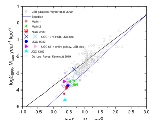
كما يمكن للمرء أن يرى في الشكل. 16، جميع gLSBGs \textcolorblackباستثناء UGC 1378 هي القيم المتطرفة من de los Reyes and Kennicutt (2019) بالنسبة للمجرات HSB - فهي منخفضة جدًا بالنسبة لكثافات سطح الغاز المحددة. يتوافق موقعها جيدًا مع موقع المجرات الأخرى ذات السطوع السطحي المنخفض التي عثر عليها Wyder et al. (2009). هناك إشارة إلى أن كفاءة تكوين النجوم قد تكون مرتبطة بالطاقة الميكانيكية لاصطدامات السحب الجزيئية العملاقة في أقراص HSB بسبب الدوران التفاضلي (Aouad et al., 2020). ومع ذلك، فإن هذا الارتباط لا يستمر عند كثافات سطح الغاز المنخفضة عند نفس القيم التي تنقطع فيها علاقة شميدت-كينيكوت المحلية، مما يشير إلى وجود آلية فيزيائية مختلفة تنظم تكوين النجوم هناك. على سبيل المثال، سيؤدي تراكم الغاز الطازج من خيوط أو مجرة تابعة غنية بالغاز إلى انخفاض واضح في كفاءة تكوين النجوم. تقديرات وفرة الأكسجين للقرص UGC 1922 عالية جدًا ()، مما يعارض تراكم الغاز الفقير بالمعادن على الأقل في هذه الحالة بالذات. \textcolorblackكما تم توضيحه بواسطة Pickering et al. (1997) فإن كثافة السطح Hi أقل من الكثافة الحرجة لتكوين النجوم المقدرة باستخدام المعيار الديناميكي المقترح بواسطة Kennicutt (1989) في جميع أنصاف الأقطار لـ Malin 2 و NGC 7589 وقريب من قيمة العتبة أو أعلى قليلاً منها لـ UGC 6614 وMalin 1 بالمقابل، قد يكون السبب في انخفاض قيم SFR في هذه المجرات. في الوقت نفسه، قام Pickering et al. (1999) بدراسة مجرة قرصية عملاقة أخرى بها كمية أكبر من تكوين النجوم التي تحدث داخل القرص والجزء الكبير من القرص يمتلك كثافة غاز أعلى من القيمة الحرجة، وبالتالي التحقق من صحة هذا المعيار. يمكن أن تكون الكفاءة المنخفضة لتكوين النجوم مرتبطة بانخفاض كثافة حجم الغاز بشكل ملحوظ. كما هو موضح بواسطة Zasov et al. (2011)، فإن كثافة حجم الغاز في المجرات LSB أقل بمقدار أمرين من تلك الموجودة في المجرات ذات السطوع السطحي الطبيعي. \textcolorblackAbramova and Zasov (2008) وأحدث Bacchini et al. (2019); Yim et al. (2020) وجد ارتباطًا وثيقًا بين الحجم كثافات الغاز وSFR والتي يمكن أن تشير إلى أن أخذ سمك القرص بعين الاعتبار يمكن أن يزيل انقطاع العلاقة على كثافات السطح المنخفضة. وفي الواقع، كما هو موضح بواسطة Bacchini et al. (2020)، فإن العلاقة بين كثافات الحجم لا تنقطع بالنسبة لمجموعة واسعة من كثافات حجم الغاز وSFR بما في ذلك نظام الكثافة المنخفضة. يمكن أن يشير ذلك إلى أن الأقراص الغازية لـ gLSBs لها سماكة عالية مما يؤدي إلى موقعها البعيد على كثافة سطح الغاز مقابل مخطط كثافة سطح SFR. هناك تأثير آخر يمكن أن يكون مهمًا في نظام الكثافة المنخفضة ويمكن أن يؤدي إلى كسر العلاقة بين كثافة سطح الغاز وكثافة سطح SFR وهو تأثير الخلفية المنتشرة في كل من آثار SFR وفي الغاز الذري والتي لم يتم أخذها في الاعتبار في الدراسة الحالية (Kumari et al., 2020).
6 مناقشة
6.1 سيناريوهات تكوين gLSBGs
الهدف الرئيسي من دراستنا هو اختيار سيناريوهات تكوين واقعية لـ gLSBGs بناءً على البيانات الرصدية لجميع الأنظمة النجمية من هذا النوع التي دُرست بالتفصيل حتى الآن. نحن نحاول أن نفهم ما إذا كانت العمليات التي تؤدي إلى تكوين مثل هذه المجرات غير العادية غير شائعة للغاية مما يجعل مجرات gLSBGs "فريدة من نوعها".
تشير بياناتنا الرصدية إلى أنه لا توجد آلية تكوين واحدة قادرة على تفسير جميع gLSBGs السبع المعروضة هنا. وفي الوقت نفسه، نقصر النظر على ثلاثة من السيناريوهات المطروحة لأن كل واحد منها يتسق مع جميع الأرصاد الخاصة بمجرة gLSBG واحدة على الأقل: (1) سيناريو يتضمن اندماجًا كبيرًا، مشابهًا لما اقترحه Saburova et al. (2018) وZhu et al. (2018); (2) تفسير الخصائص غير العادية لأقراص LSB العملاقة بخصائص مميزة لهالة المادة المظلمة، وهي الكثافة المركزية المنخفضة والمقياس الشعاعي الكبير للهالة (Kasparova et al., 2014)؛ (3) سيناريو تكوين على مرحلتين يتشكل فيه القرص العملاق عبر تراكم الغاز على مجرة HSB "طبيعية" موجودة مسبقًا (Saburova et al., 2019).
في الجدول 7، نقدم ملخصًا موجزًا للمؤشرات التي نتوقعها في كل من السيناريوهات الثلاثة المدروسة. ويقيّم الجدول 8 جميع الاحتمالات لكل مجرة في عينتنا.
| Major merger | Sparse dark halo |
|
|||
|---|---|---|---|---|---|
| DM parameters agree with the giant disc radius | No | Yes | No | ||
| Two discs with different scale lengths | No | No | Yes | ||
| Dynamical overheating of the disc | Expected | Not expected | Not expected | ||
| Disturbed morphology | Expected | Not expected | Not expected | ||
| Presence of satellites | Expected | Not expected | Not expected |
| Major merger |
|
|
||||||
|---|---|---|---|---|---|---|---|---|
| Malin 1 | Possibly | Uncertain | Possibly | |||||
| Malin 2 | No | Yes | No | |||||
| NGC 7589 | No | Yes | Yes | |||||
| UGC 1378 | No | No | Yes | |||||
| UGC 1382 | Possibly | No | Possibly | |||||
| UGC 1922 | Yes | Possibly | No | |||||
| UGC 6614 | No | Yes | Possibly |
نقدم مناقشة تفصيلية لسيناريوهات التكوين المدروسة في الأقسام الفرعية التالية. لكن أولاً، نوضح سبب عدم العثور على ما يكفي من الأدلة الداعمة لبعض الآليات الأخرى التي تمت مناقشتها في الأدبيات.
نعتقد أن سيناريو تكوين القرص الخارجي نتيجة اندماج مجرة تابعة قزمة (مقترح من Peñarrubia et al. (2006) لـ Messier 31) يواجه صعوبات في تفسير تكوين قرص gLSB لعدة أسباب. (ط) غالبًا ما يحتوي قرص LSB الممتد على جزء كبير من المادة الباريونية في gLSBG: كتلتها في UGC 1378 وUGC 1922 هي و (Saburova, 2018; Saburova et al., 2019) (انظر أيضًا الجدول 6 لمعرفة كتل الأقراص الموسعة التي تم الحصول عليها في هذه الورقة). في جميع حالاتنا، تتجاوز كتل الهيدروجين الذري (الجدول 2)، وهي 10–100 مرات أكثر مما يمكن أن نتوقعه لـ مجرة قزمة تابعة (انظر على سبيل المثال Bettoni et al., 2003). (ii) وثمة سبب آخر هو أننا لا نرصد هبوطًا سريعًا في منحنى الدوران عند أطراف أقراص LSB العملاقة (انظر، مثلًا Kasparova et al., 2014) كما هو متوقع في سيناريو اندماج القمر القزم. إن الاتجاه العشوائي والشذوذ المداري الكبير لمدارات الأقمار الساقطة، كما تتنبأ به بعض المحاكاة العددية في كونية المادة المظلمة الباردة لامبدا (CDM)، سيؤديان على الأرجح إلى فقدان كل من الغاز والنجوم زخمهما الزاوي، وإلى تكوين هالة نجمية حارة ديناميكيًا مع غوص الغاز نحو المركز بدلًا من تكوين قرص. ويوجد حل محتمل إذا سقطت أقمار عديدة على سلف gLSBG من مستوى رقيق واسع دوار، مثل تلك المكتشفة حول مجرة أندروميدا (Ibata et al., 2013) وحول Centaurus A (Müller et al., 2018)، والتي يُشتبه في اصطفافها مع البنية واسعة النطاق للكون (Libeskind et al., 2015). وعلى الرغم من أن مثل هذه المستويات تُعد إحدى "مشكلات المقاييس الصغيرة" في CDM (Bullock and Boylan-Kolchin, 2017)، فإن المحاكاة العددية تعيد إنتاجها بنجاح (انظر مثلًا Ibata et al., 2014; Santos-Santos et al., 2020). ومع ذلك، لا تزال قابلية هذا السيناريو لتكوين gLSBG موضع تساؤل، لأن معظم gLSBGs المعروفة لا تمتلك أقمارًا كثيرة مرصودة في جوارها، في حين أن بعض هذه الأقمار كان لا بد أن ينجو إذا حدث تراكم هائل لحلقة أو مستوى من الأقمار في الماضي القريب أو كان يحدث حاليًا.
هناك سيناريو آخر يشرح تكوين هيكل LSB العملاق المتوسع الشبيه بالحلقة عن طريق الاصطدام المباشر مع دخيل ضخم اقترحه Mapelli et al. (2008) يبدو أيضًا غير مرجح، حيث لم يتم العثور على أي من التوقيعات المتوقعة لهذا النموذج في الصور العميقة ومقاطع الألوان لـ gLSBGs (Kasparova et al., 2014; Boissier et al., 2016; Hagen et al., 2016). بالإضافة إلى ذلك، يجب أن يكون السلف في هذا النموذج عبارة عن مجرة LSB ضخمة بالفعل، مما يجعله أقل واقعية ولا يفسر حقًا تكوين قرص LSB عملاق.
6.1.1 أصل المناطق المركزية في gLSBGs
إحدى الطرق الممكنة لفهم تطور مجرة ما هي استكشاف مناطقها الداخلية ونواتها. ويمكن أن تساعدنا بنية الانتفاخ وكتلة الثقب الأسود المركزي على فهم تاريخ اندماجات المجرة بصورة أفضل، إذ يُتوقع أن تتطور هذه المكونات معًا (انظر مثلًا Kormendy and Ho, 2013, والمراجع الواردة هناك).
يمكن للمرء أن يلاحظ من الجدول 2 أن gLSBGs تستضيف AGN في ستة من أصل سبع حالات معتبرة99 9 المجرة السابعة – UGC 1378 قد تحتوي أيضًا على AGN وفقًا لـ Schombert (1998). - معدل حدوث AGN مرتفع للغاية مقارنة بمجرات HSB (Ho et al., 1997). تمت ملاحظة التردد العالي لتوقيعات AGN منخفضة اللمعان في gLSBGs مقارنة بالمجرات الأخرى من النوع المتأخر بواسطة Schombert (1998).
تفصيل آخر يتضح من الشكل 17 والجدول 2 هو أن gLSBGs تميل إلى امتلاك كتل منخفضة للثقوب السوداء المركزية ()، وقد تقترب أحيانًا من مجال الثقوب السوداء متوسطة الكتلة. لاحظ Subramanian et al. (2016) إزاحة منهجية للمجرات LSB عن العلاقة ، حيث يُؤخذ متوسط تشتت السرعة النجمية داخل نصف قطر فعال واحد. ووفقًا لـ Subramanian et al. (2016)، تميل المجرات LSB إلى امتلاك كتل ثقوب سوداء أقل مما يُتوقع من قيم تشتت السرعة في انتفاخاتها.
في الشكل 17، نعرض لـ gLSBGs في عينتنا ونقارنها بعينة كبيرة من المجرات "العادية" وبالانحدار الذي وجده Sahu et al. (2019). تأتي قياسات تشتت السرعة النجمية لـ gLSBGs من هذه الدراسة ومن Reshetnikov et al. (2010); Saburova (2018); Saburova et al. (2019). وترد في الجدول 2 كتل الثقوب السوداء المعتمدة ومصادر البيانات المقابلة لها. وتُظهر الدوائر المفتوحة والممتلئة المجرات المبكرة والمتأخرة من Sahu et al. (2019). نستخدم الانحدار الذي حصل عليه Sahu et al. (2019) لكل من المجرات المبكرة والمتأخرة (ولا يتغير الوضع كثيرًا إذا اقتصرنا على الانحدار المستخرج للمجرات ذات الأقراص). ويتضح من الشكل 17 أن ثلاثًا من gLSBGs الخمس ذات كتل الثقوب السوداء المقيسة تنحرف عن العلاقة التي وجدها Sahu et al. (2019)، وأن UGC 6614 تقع على هامش مجال ، إذ تملك أقل قليلًا مما يُتوقع بالنسبة إلى لها. وقد يشير ذلك إلى أن انتفاخات gLSBGs المدروسة لم تتطور تطورًا مشتركًا مع الثقوب السوداء المركزية، بل إما تشكلت in situ عبر التطور الذاتي أو نمت عبر اندماجات صغرى، وهي عمليات لا يُتوقع أن تزيد كتلة لأن المجرات القزمة لا تستضيف غالبًا ثقوبًا سوداء مركزية ضخمة. ووجد Kormendy et al. (2011)، الذي أورد تصنيف الانتفاخات الكاذبة للمجرات ذات الثقوب السوداء المكتشفة ديناميكيًا، أن كتل الثقوب السوداء لا ترتبط إلا ارتباطًا ضعيفًا جدًا، في أفضل الأحوال، بخصائص الانتفاخات الكاذبة.
أظهر Graham (2014) أن تحديد الانتفاخات الكاذبة صعب وأن تصنيفها يتضمن قدرًا من الذاتية. ومع ذلك، تجدر الإشارة إلى أن Malin 1، وMalin 2 (في نموذج القرصين)، وUGC 6614، وUGC 1378، وUGC 1922 لها مؤشرات Sérsic مقدارها ، ولا تبدو انتفاخاتها أكثر استدارة من أقراصها، وهو ما قد يكون الحجة الرئيسية لتصنيفها انتفاخات كاذبة. وهذا يجعل الوتيرة العالية لنشاط AGN بين gLSBGs أكثر إثارة للاهتمام، لأن مؤشرات AGN في نسب خطوط الانبعاث تنخفض بوضوح في المجرات ذات الانتفاخات الكاذبة (Yesuf et al., 2020). وقد يشير ذلك إلى وجود إمداد غازي حالي إلى مراكز gLSBGs يؤدي إلى نشاط AGN، ويرتبط بتراكم مادة إما من خيط كوني أو من مجرة تابعة غنية بالغاز. ويمكن أيضًا أن يكون الدوران المعاكس للغاز الذي نرصده في UGC 1382 وUGC 1922 مرتبطًا بتراكم الغاز الخارجي. وقد أظهر Khoperskov et al. (2020) أن AGN يُحفَّز بكفاءة بسقوط الغاز عكسي الدوران إلى داخل المجرة.
في الوقت نفسه، وفقًا لـ Kormendy et al. (2011)، فإن نمو الثقوب السوداء المركزية في الانتفاخات الكاذبة لا تحكمه في المقام الأول عمليات شاملة مثل الاندماجات الكبرى، بل عمليات محلية وعشوائية. وفي هذا النظام، لا يُتوقع أن تتطور الثقوب السوداء مع الانتفاخات، ومن ثم قد لا ترتبط كتلها بخصائص الانتفاخات، وهو بالضبط ما نراه في الشكل 17 بالنسبة إلى gLSBGs باستثناء NGC 7589 (وربما UGC 6614). وقد يعني ذلك أن تاريخ معظم gLSBGs لم يشهد كثيرًا من أحداث الاندماج الكبرى، وأن كتلتها الباريونية تراكمت عبر عمليات أخرى. كما توفر دراسة العناقيد الكروية في UGC 6614 باستخدام صور HST العميقة دليلًا على أن المجرة راكمت كتلتها النجمية عبر نشاط متقطع لتكوين النجوم، وأن تاريخ تكوين النجوم فيها يفتقر إلى أحداث انفجار نجمي مهيمنة كان يمكن أن تحفزها الاندماجات الكبرى Kim (2011).
مع الأخذ في الاعتبار كل هذه الحقائق، نستنتج أن الخصائص المرصودة للأجزاء المركزية والثقوب السوداء المركزية لـ gLSBGs تدعم سيناريو تكوين قرص gLSB عن طريق تراكم الغاز البارد الخارجي إما من الخيوط الكونية أو من المجرات التابعة الغنية بالغاز وترفض تكوينها عن طريق عمليات الاندماج الكبرى.
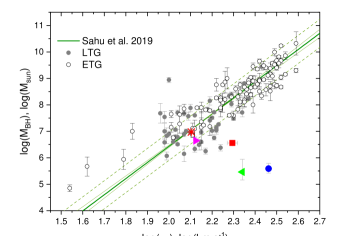
6.1.2 تراكم الغاز على مجرة موجودة سابقًا (HSB+LSB)
منذ حوالي عقد من الزمن (Lelli et al., 2010) أصبح من الواضح أن بعض المجرات gLSBG لها بنية معقدة تتكون من مجرة حلزونية داخلية "طبيعية" من النوع المبكر HSB مغمورة في قرص LSB ممتد. لا يمكن وصف أقراص المجرات HSB+LSB من خلال مقطع أسي واحد. نتوقع أن مدى الهالة المظلمة في مثل هذه المجرات يتوافق جيدًا مع حجم لجزء HSB. يمكن أن يشير المقياس الشعاعي المنخفض نسبيًا لهالة المادة المظلمة إلى أن الغاز المتراكم يمكن أن يكون له زخم زاوي يختلف عن زخم قرص HSB. في هذه الحالة، هناك تراكم على مرحلتين للقرص المجري والسؤال الرئيسي هو: من أين أتت المواد الإضافية (الغاز والنجوم؟) لتكوين القرص LSB؟ يجب أن يكون لبيئة مثل هذه المجرات، أولاً، مصدر لتراكم الغاز البارد، وثانيًا، يجب ألا يؤدي التفاعل الوثيق المحتمل إلى تمزيق محيط LSB للقرص بسبب تأثيرات المد والجزر. إذا كانت المادة الإضافية تنشأ من خيوط كونية، فيجب أن تكون بيئة هذه المجرة متناثرة. لا تتعارض بيانات الرصد الخاصة بأربعة من سبعة gLSBGs مع هذا السيناريو.
في حالة Malin 1 هناك عدة حقائق تتحدث لصالح آلية التكوين هذه. يُظهر Malin 1 بنية معقدة للقرص المزدوج تتضمن أجزاء HSB وLSB (Lelli et al., 2010). الجزء الخارجي أكثر زرقة بكثير من الجزء الداخلي (Galaz et al., 2015). عمر القرص الممتد صغير (Boissier et al., 2016). ربما حُفزت الدفعة الحالية من تكوين النجوم في القرص الممتد بفعل اندماج صغير حديث قبل نحو 1 Gyr مضى (Reshetnikov et al., 2010).
NGC 7589 يوضح أيضًا بنية HSB+LSB (Lelli et al., 2010). تتغير الزاوية الموضعية للمحور الرئيسي لـ NGC 7589 مع نصف القطر الواضح من التحليل الضوئي وتطور خطوط تساوي السرعة في مجال السرعة Hi المنشور بواسطة Pickering et al. (1997). يمكن أن يشير هذا إلى الأصل الخارجي لهيكل LSB الخارجي. تمتلك هذه المجرة أيضًا رفيقًا ضخمًا مع اختلاف في السرعة تقريبًا 100 km s-1 (NGC 7603) والذي له أذرع حلزونية مضطربة ويبلغ حجمها ضعف حجم المجرة. NGC 7589). قد يكون كل من القرص الأزرق الممتد لـNGC 7589 والمظهر المضطرب لـNGC 7603 من آثار تفاعلات سابقة بين هاتين المجرتين. من المحتمل أن تكون الأذرع الحلزونية الرفيعة الممدودة قصيرة العمر وترتبط بموجة الكثافة في القرص الناتجة عن تفاعل المد والجزر الحديث بين هذين النظامين. في هذه الحالة، أضاء التفاعل القرص العملاق NGC 7589 والذي أصبح أكثر وضوحًا مع الأذرع الحلزونية واللون الأزرق للقرص الممتد بسبب التفاعل الناتج عن انفجار تشكل النجوم.
تمت دراسة UGC 1378 بالتفصيل في Saburova et al. (2019) الذي اقترح سيناريو تكوين من خطوتين أدى فيه تراكم الغاز في مجرة حلزونية HSB "نموذجية" مشابهة لمجرة درب التبانة إلى تكوين قرص LSB الممتد.
UGC 1382 هي مجرة عدسية ذات قرص LSB ممتد. تكشف بياناتنا أن الغاز المتأين في المركز يدور بطريقة معاكسة للقرص النجمي القديم، لكنه يشارك في الدوران مع القرص العملاق Hi الذي وصفه Hagen et al. (2016). أي أن هناك دورانًا معاكسًا للأقراص كبيرة الحجم على جميع المسافات من مركز المجرة. بافتراض وجود صلة تطورية طبيعية بين قرص Hi الممتد وقرص LSB، نتوقع أن يدور قرص LSB النجمي أيضًا بشكل معاكس فيما يتعلق بجزء HSB. لسوء الحظ، فإن أطياف خط الامتصاص لدينا لا تصل إلى الجزء LSB ولا يمكن استخدامها لدعم أو دحض هذه الفرضية. ومع ذلك، فإن قرص LSB المضاد للدوران قد يساهم في LOSVD النجمي حتى في الجزء HSB من المجرة. تدعم هذه الفرضية القيم غير الصفرية لمنحنيي و (انظر اللوحة اليمنى في الشكل 5)، إذ تشير إلى شكل غير غاوسي لـ LOSVD النجمي. للتحقق من هذه الفكرة، استعدنا LOSVD النجمي بصيغة غير بارامترية بتطبيق منهجية Katkov et al. (2011, 2016). لسوء الحظ، لم نعثر على علامات واضحة للدوران النجمي المعاكس مثل قمتين متميزتين أو ذيول طويلة في LOSVD. رصدنا شكلًا غير غاوسي قليلًا وبنية ذات قمة في LOSVD تتغير تغيرًا طفيفًا من حيز إلى آخر، على الأرجح بسبب الضجيج في البيانات. وهذا يعني أن القرص النجمي LSB خافت جدًا بحيث لا يمكن اكتشافه في المنطقة التي يسيطر عليها القرص HSB. لذلك، فإن التحليل الطيفي فائق العمق المخصص لقرص LSB الخارجي فقط هو الذي قد يؤكد توقعاتنا حول الدوران المعاكس لجزء LSB النجمي في هذه المجرة.
يبدي قرص Hi في UGC 1382، ذي سرعة الدوران 280 km s-1(Hagen et al., 2016)، دلائل على تكوين نجمي جارٍ (كما يتضح من وجود أذرع حلزونية ساطعة في الأشعة فوق البنفسجية في صور GALEX). يعطي تركيب الطيف الخاص بنا عمرًا قديمًا جدًا للجزء المركزي مع اتجاه العمر المتناقص مع نصف القطر، أي تدرج عمري سلبي (انظر الشكل 5). وفقًا لـ Hagen et al. (2016) فإن عمر اللوالب LSB أكبر بنحو 4 Gyr من عمر جزء HSB. يمكن أن يرتبط هذا الاختلاف في بياناتنا بمنهجية تقدير العمر (الطيفية مقابل الضوئية) وتاريخ تكوين النجوم المعتمد (SSP مقابل الانخفاض الأسي). نعتقد أن الدوران المعاكس للقرص Hi واسع النطاق يمكن أن يشير إلى تراكم الغاز من فتيل (Algorry et al., 2014) على مجرة قرصية من النوع المبكر موجودة مسبقًا (ربما S0).
6.1.3 هالة مظلمة قليلة الكثافة
السيناريو الثاني هو تكوين غير كارثي لقرص واحد بمقياس شعاعي كبير في هالة متناثرة من المادة المظلمة (مقياس شعاعي كبير وكثافة مركزية منخفضة). في أربع حالات، Malin 2، NGC 7589، UGC 6614 وUGC 1922، يتوافق المقياس الشعاعي للهالة المظلمة مع حجم قرص ممتد. يجب على المرء أن يأخذ في الاعتبار أن الشكوك المتعلقة بمعلمات هالة المادة المظلمة لـ UGC 1922 وNGC 7589 مرتفعة جدًا بحيث لا يمكن الإدلاء ببيانات حازمة حول ضحالة هالتها. من المحتمل أن تتشكل المجرات LSB ذات الحجم الطبيعي في هالات ذات تركيزات منخفضة من مضيف سريع الدوران نتيجة لتوازن الطرد المركزي (Mo et al., 1998; Bullock et al., 2001; Kim and Lee, 2013)، والحالات القصوى لمثل هذه الهالات يمكن أن تستضيف gLSBGs. يمكن العثور على أسباب تكوين الهالة المظلمة بمثل هذه الخصائص في النماذج العددية لعمليات اندماج الهالة الأولية ومن المحتمل أن تكون مرتبطة بالبيئة منخفضة الكثافة (Macciò et al., 2007).
6.1.4 اندماج كبير
في إطار تكوين المجرات الحديث، يجب أن تكون المجرات الضخمة ذات الكتلة النجمية قد شهدت اندماجًا كبيرًا واحدًا على الأقل خلال حياتها (Rodriguez-Gomez et al., 2015). ومع ذلك، من المرجح أن تحدث مثل هذه الأحداث في بيئة كثيفة. من المتوقع أن تحتوي المجرة التي تتشكل بهذه الطريقة على قرص نجمي ساخن (إذا بقي القرص على قيد الحياة على الإطلاق)، وربما يكون شكله مضطربًا (Saburova et al., 2018). ومع ذلك، فإن جميع البيانات الموجودة لـ gLSBGs باستثناء UGC 1922، تظهر عكس ذلك. يمكن للهيكل الحلزوني البارز المنظم جيدًا أن يدل بشكل غير مباشر على أن أقراص معظم gLSBGs المعروفة رفيعة، وبالتالي، ليست محمومة بشكل كبير (Zasov et al. قيد الإعداد). لتأكيد السيناريو الكارثي، نحتاج إلى تقدير تشتت السرعة النجمية في منطقة القرص LSB الخاص بـ gLSBGs. هذه مهمة مراقبة صعبة للغاية. تسمح أجهزة قياس الطيف الضوئي الحديثة لعلماء الفلك بفحص تشتت السرعة وصولاً إلى 10–15 km s-1 عند سطوع سطحي منخفض يصل إلى mag arcsec-2 في UDGs (Chilingarian et al., 2019)، والذي يجب، من حيث المبدأ، أن يكون كافيًا لبعض أقراص gLSB. ومع ذلك، نظرًا للتجمعات النجمية الشابة والتي من المحتمل أن تكون فقيرة بالمعادن والمتوقعة في gLSBGs، فمن المتوقع أن يكون لأطيافها خطوط امتصاص أقل عمقًا مما يؤدي إلى زيادة كبيرة في عدم اليقين في الحركية الداخلية للأطياف ذات العمق نفسه. (Chilingarian and Grishin, 2020). الحل القابل للتطبيق هو العثور على gLSBGs على الحافة حيث يتم تعزيز السطوع السطحي بسبب تكامل خط البصر من خلال القرص.
اقترح Zhu et al. (2018) سيناريو دمج رئيسي لـ Malin 1 والذي لا يتعارض مع خصائصه المرصودة بما في ذلك غياب تدرج العمر النجمي في القرص. نلاحظ أيضًا وجود قمرين صناعيين باللون الأحمر تم إسقاطهما على قرص LSB لـ Malin 1 (Reshetnikov et al., 2010; Galaz et al., 2015) والتي يمكن أن تكون البقايا الباقية من المجرات الأكبر التي تفاعلت معها. خصائصها الهيكلية تضعها في فئة نادرة من المجرات الإهليلجية المدمجة (Chilingarian et al., 2009b) ثبت أنها تشكلت عن طريق تجريد المد والجزر من الأسلاف الضخمة (Chilingarian and Zolotukhin, 2015). وتدور أيضًا مجرة مدمجة منخفضة السطوع حول UGC 1382. ومع ذلك، يجب على المرء أن يضع في اعتباره أن الدراسة التي أجراها Zhu et al. (2018) لا تذكر ما إذا كانوا قد نجحوا في إعادة إنتاج مقطع الضوء الموصوف بمجموع مكونين أسيين، كما تم توضيحه لـ Malin 1 بواسطة Lelli et al. (2010).
في حالة Malin 2 يمكننا استبعاد سيناريو الاندماج الرئيسي نظرًا لأن القرص الخاص به يكون محمومًا بشكل ديناميكي بشكل طفيف فقط ولاحظ Kasparova et al. (2014) تدرجًا معدنيًا حادًا للغاز الموجود في القرص والذي من المحتمل أن يتم تسويته أثناء عمليات الاندماج (انظر، على سبيل المثال. Zasov et al., 2015, والمراجع فيه).
يبدو أن UGC 1922 الموصوف بالتفصيل في Saburova et al. (2018) يختلف عن جميع gLSBGs الأخرى المعروفة. يحتوي على قرص نجمي شديد الحرارة وأذرع حلزونية غير منتظمة. الغاز المتأين الموجود في المنطقة الداخلية يدور بشكل معاكس بالنسبة للجزء الخارجي من المجرة. أعاد Saburova et al. (2018) إنتاج معظم السمات المرصودة للمجرة في نموذج الاندماج الداخلي للمجرتين العملاقتين Sa وSd. لذلك، من المحتمل أن تكون UGC 1922 نتيجة لعملية اندماج كبيرة. ويدعم هذا الافتراض أيضًا حقيقة أن هذه هي المجرة الوحيدة في عينتنا التي تنحرف عن علاقة TF.
6.2 المقارنة مع المجرات الأخرى ذات الأقراص الممتدة LSB وXUV
يعد ترسيم الحدود بين gLSBGs ومجرات LSB الموسعة "العادية" في مساحة المعلمة أمرًا تعسفيًا إلى حد ما. نحن نحصر هذه الدراسة في نصف قطر قرص الأجرام الأكبر من 50 kpc، والذي نعتبره حدًا غير رسمي لـ gLSBGs. وفي الوقت نفسه، تتمتع المجرات LSB ذات الأحجام المتوسطة بخصائص مشابهة لمجرات gLSBG وقد يكون لها سيناريوهات تكوين مماثلة. لذلك، قد يكون من المفيد مقارنة عينتنا مع LSBGs الموسعة ذات أطوال مقياس القرص الأصغر إلى حد ما من 50 kpc. إحدى الحالات البارزة هيNGC 5533 مع قرص LSB بطول مقياس يبلغ تقريبًا 9 kpc (Noordermeer and van der Hulst, 2007). على الرغم من كونها أصغر بكثير من UGC 1378، فإن هذه المجرة لديها بنية معقدة مماثلة تحتوي على "مجرة HSB" مدمجة في قرص LSB ممتد (Sil’chenko et al., 1998). وبما أن المجرتين لهما خصائص هيكلية متشابهة على الرغم من اختلاف المقاييس المكانية، فسيكون من المفيد مقارنة خصائصهما العامة. تتشابه المجموعات النجمية في الجزء HSB من NGC 5533 أيضًا مع تلك الموجودة في UGC 1378. القرص النجمي HSB الخاص بـNGC 5533 فقير بالمعادن وله عمر متوسط ( Gyr). يتمتع الانتفاخ بمعدنية نجمية شمسية وعمره أكبر قليلاً من Gyr (I. Katkov، اتصال خاص). منحنى دوران Hi لـ NGC 5533 يتناقص (Noordermeer et al., 2007)، مما يؤدي إلى مقياس شعاعي صغير للهالة المظلمة (Noordermeer, 2006). يشير هيكل HSB + LSB المعقد والمقياس الشعاعي القصير للهالة المظلمة إلى أن قرص LSB الممتد لـ NGC 5533 (على غرار UGC 1378) يمكن أن يكون قد تشكل عن طريق تراكم الغاز في دوامة من النوع المبكر الموجودة مسبقًا.
نظام LSB ممتد آخر هو NGC 5383 بطول مقياس القرص 9.7 kpc (van der Kruit and Bosma, 1978). تحتوي هذه المجرة على شريط قوي وبنية لولبية LSB ممتدة تشبه تلك الموجودة في NGC 7589. يحتوي النظام أيضًا على مرافق UGC 8877 على مسافة تقريبية 30 kpc مع فرق السرعة 100 km s-1. نرى تشعب الأذرع الحلزونية لـNGC 5383. يمكن أن تفرض قوى المد والجزر وضعًا جديدًا لموجة الكثافة في القرص، مما أدى إلى ظهور الأذرع الحلزونية الباهتة كما هو الحال، على سبيل المثال، في النظام التفاعلي Arp 82 (Zasov et al., 2019).
أنظمة \textcolorblackمن الناحية الشكلية تشبه UGC 1382، ولكن مع أقراص أصغر يمكن العثور عليها في الصور العميقة من مشروع MATLAS (التجميع الشامل للمجرات من النوع المبكر مع بنياتها الدقيقة Duc et al., 2015). أحد الأمثلة على ذلك هو UGC 9519، وهي مجرة قزمة S0 محاطة بقرص حلزوني LSB ممتد يبلغ نصف قطره 30 kpc. اكتشف Sil’chenko et al. (2019) أن الغاز الموجود في الجزء الداخلي من UGC 9519 يدور في مستوى قطبي تقريبًا بالنسبة للقرص النجمي ويتم فصل القرص الخارجي عن الجسم الرئيسي للمجرة. قد يشير هذا إلى تراكم الغاز من مصادر خارجية (Sil’chenko et al., 2019).
يمكن اعتبار تشكل النجوم gLSBGs امتدادًا لفئة المجرات ذات أقراص الأشعة فوق البنفسجية الممتدة (أقراص XUV Gil de Paz et al., 2005; Thilker et al., 2005, 2007) إلى أحجام أقراص أكبر وبالتالي يمكن أن تتطور بطريقة مماثلة. Hagen et al. (2016) صنف UGC 1382 كقرص من النوع I XUV مشابه لمجرات القرص XUV النموذجية M 83 و NGC 4625 (Gil de Paz et al., 2005; Thilker et al., 2005). يشير Boissier et al. (2016) أيضًا إلى أن Malin 1 يمكن أن يكون حالة متطرفة لقرص XUV مضاد للاقتطاع. وفقًا لـ Thilker et al. (2007)، تم العثور على أقراص Type I XUV في ما يصل إلى 20 في المائة من المجرات وتغطي النطاق الكامل لأنواع Hubble. الخصائص العالمية للمجرات ذات أقراص XUV تشبه تلك الموجودة في المجرات "العادية"، والتي يمكن أن تشير إلى أن تكوين قرص XUV يمكن أن يكون مرحلة من عملية تكوين المجرات "العادية". أشار Thilker et al. (2007) إلى أن التفاعل يمكن أن يؤدي إلى تكوين قرص XUV، أو بعبارة أخرى، يؤدي إلى انفجار تكوين النجوم في القرص الغازي الممتد والذي كان سيظل سلبيًا و"مظلمًا" لولا ذلك. قد يكون المحفز الآخر المحتمل هو المعدل النوعي العالي لتراكم الغاز (أي لكل وحدة كتلة نجمية).
من المثير للاهتمام مقارنة gLSBGs بجسم Hoag الشهير، وهي مجرة حلقية عملاقة غير عادية في بيئة منخفضة الكثافة اكتشفها Hoag (1950). تحيط الحلقة الزرقاء والحديثة بمجرة إهليلجية تستضيف مجموعة نجمية قديمة غنية بالمعادن (Finkelman et al., 2011). يبلغ نصف قطر الحلقة حوالي 25 kpc ولها نمط حلزوني مرئي بوضوح. اقترح Finkelman et al. (2011) أن البنية الغريبة والخصائص المرصودة لجسم هوغ هي نتيجة لتراكم الغاز في مجرة إهليلجية موجودة مسبقًا. وبالتالي يمكن أن يكون جسم هوج حالة خاصة من وحدات gLSBG "الفاشلة" حيث بدلاً من قرص LSB العملاق، تم تكوين حلقة تكوين النجوم بسبب بعض الخصائص المحددة للنظام، على سبيل المثال. إمكانات ثلاثية المحاور للمجرة الإهليلجية، والتي يمكن أن تؤدي إلى فجوة بارزة بين النواة والحلقة.
توجد أنظمة LSB ذات هياكل HSB + LSB معقدة مثل تلك الموجودة في العديد من gLSBGs ولكن بأحجام أكثر اعتدالًا. مثال مثير للاهتمام لمثل هذا النظام هو Ark 18 الموجود في فراغ Eridanus مع قرص LSB أزرق ممتد وجزء مركزي مشرق على شكل بيضاوي والذي من المحتمل أن يكون نتيجة اندماج قزم-قزم (Egorova et al., 2021).
6.3 مقارنة مجرات gLSBG مع مجرات HSB كبيرة الحجم
Ogle et al. (2016) اكتشف أن حوالي 6 في المائة من المجرات الأكثر سطوعًا بصريًا تحتوي على أقراص HSB عملاقة بأقطار متساوية تبلغ kpc. تم توسيع هذه العينة بواسطة Ogle et al. (2019) والتي تضمنت أيضًا "عدسيات فائقة" غير مكونة للنجوم، بالإضافة إلى المجرات الحلزونية الفائقة والمجرات الإهليلجية العملاقة. جزء صغير من المجرات فائقة السطوع كان بها شكل مضطرب مما يشير إلى عمليات اندماج حديثة. على غرار gLSBGs، تكون المجرات القرصية الفائقة حمراء من الداخل وزرقاء من الخارج مما قد يكون متسقًا مع النمو المستمر للقرص عن طريق التراكم والاندماجات البسيطة (Ogle et al., 2019). Kasparova et al. (2020) درس بالتفصيل حافة القرص "عدسي فائق" NGC 7572 مع قرص سميك ضخم للغاية وخلص إلى أن من المحتمل أن يكون نمو القرص الرقيق قد توقف قبل الأوان بسبب البيئة العنقودية الكثيفة. وبخلاف ذلك، لكان هذا الجسم قد أصبح "حلزونيًا فائقًا" هائلاً إذا تمكن من الاستمرار في نمو قرصه من مصدر غاز خارجي.
قام Saburova (2018) أيضًا بدراسة المجرات القرصية العملاقة HSB عند انزياحات حمراء أقل مقارنةً بتلك الموجودة في عينة Ogle et al. (2016) وباستخدام معيار اختيار مختلف، نصف القطر المتساوي الضوء بدلاً من اللمعان المستخدم. في Ogle et al. (2016). اشتق Saburova (2018) معلمات الهالات المظلمة للمجرات HSB العملاقة وخلص إلى أنها تميل إلى امتلاك كتل هالة عالية ومقاييس شعاعية تتوافق مع نصف قطر القرص الكبير. وهكذا، اقترح Saburova (2018) أن حجم عمالقة HSB يرجع إلى الهالة المظلمة المتناثرة التي تشبه سيناريو التكوين بواسطة Kasparova et al. (2014) المقترح لـ gLSBG Malin 2.
ومن الحالات المثيرة للاهتمام المجرة الحلزونية العملاقة LEDA 1970716 التي تم اكتشافها عن طريق الفحص البصري للصور الضوئية DECaLS. لها ذراع حلزوني غير متماثل مع كتل زرقاء من تشكل النجوم والتي تمتد إلى 120 kpc من المركز، والتي يمكن أن يكون تكوينها ناتجًا عن التفاعل مع المجرات المجاورة. يوضح هذا المثال إمكانية تكوين قرص LSB عملاق بفعل تفاعلات الجاذبية (المرورات القريبة).
7 الملخص
قمنا بجمع ملاحظات طيفية طويلة الشق لأربعة مجرات gLSBGs بالإضافة إلى الأنظمة الثلاثة مع البيانات المتوفرة في الأدبيات. أجرينا أيضًا تحليلًا ضوئيًا سطحيًا لـ NGC 7589 وUGC 6614 على صور أرشيفية عميقة. قمنا بتحليل جميع المعلومات المتاحة عن عينة مكونة من سبع مجرات gLSBG، وقمنا بمقارنتها بالمجرات ذات الأحجام المعتدلة، والمجرات HSB العملاقة ("المجرات الحلزونية الفائقة").
تفضل بيانات الرصد الأصل الخارجي لأقراص LSB العملاقة لمعظم gLSBGs. بالنسبة إلى NGC 7589، UGC 1378، وUGC 1382، فإننا نؤيد سيناريو التكوين على مرحلتين حيث يكون قرص LSB الممتد نتيجة لتراكم الغاز على مجرة من النوع المبكر الموجودة مسبقًا. توجد أيضًا gLSBGs مثل UGC 1922 والتي من المحتمل أنها تشكلت من خلال عملية اندماج كبيرة. بالنسبة لـ Malin 1 وUGC 1382، لا يمكننا أيضًا استبعاد فرضية الاندماج الكبرى. بعض سيناريوهات التكوين البديلة ممكنة أيضًا. بالنسبة لـ Malin 2، UGC 6614 وربما NGC 7589، وجدنا مقياسًا شعاعيًا مرتفعًا وكثافة مركزية منخفضة لهالاتها المظلمة، لذلك يمكن تحديد الخصائص غير العادية لأقراصها بواسطة هالات المادة المظلمة المتناثرة.
يتم دعم سيناريوهات التكوين المقترحة من خلال الخصائص المرصودة التالية لـ gLSBGs:
-
•
رصدنا دورانًا معاكسًا للغاز المتأين في الأجزاء الداخلية من مجرتين من أصل سبع مجرات gLSBGs مدروسة. ولوحظ تكرار إحصائي مرتفع مماثل للحركيات المنفصلة حركيًا في المجرات العدسية المعزولة (Katkov et al., 2014)، حيث يكون الأصل الخارجي للغاز عبر التراكم هو السيناريو المفضل.
-
•
إن كثافات سطح معدل تشكل النجوم في gLSBGs منخفضة جدًا بالنسبة إلى محتواها الغازي، وقد يكون ذلك نتيجة لعدم كفاءة تشكل النجوم، مثلًا بسبب انخفاض الكثافة الحجمية للغاز أو بسبب تراكم حديث جدًا للغاز.
-
•
تستضيف ست مجرات على الأقل من أصل السبع المعروضة نوى مجرية نشطة. ويتطلب هذا المعدل المرتفع من AGN وجود إمداد غازي يصل إلى المناطق المركزية من المجرات. وفي الوقت نفسه تبدو كتل الثقوب السوداء المركزية أقل بكثير مما هو متوقع من تشتت السرعات النجمية المركزي المقاس، وذلك اتساقًا مع نتائج سابقة لدى Ramya et al. (2011); Subramanian et al. (2016). وقد يشير ذلك إلى أن تاريخ gLSBGs لم يشهد كثيرًا من أحداث الاندماج الكبرى، على نحو مشابه للمجرات ذات الانتفاخات الأصغر التي تستضيف ثقوبًا سوداء نشطة متوسطة الكتلة (Chilingarian et al., 2018).
-
•
أجرينا النمذجة الكتلية لمنحنيات الدوران البصرية + Hi للمجرات السبع gLSBGs باستخدام مقطع كثافة المادة المظلمة لبوركرت. تُظهر المعلمات المشتقة للهالات المظلمة سلوكًا مختلفًا مقارنة بنصف قطر القرص LSB و والتي يمكن أن تشير إلى سيناريوهات تكوين مختلفة للمجرات قيد النظر.
-
•
إن التجمعات النجمية في الأجزاء المركزية لمعظم gLSBGs المعروضة قديمة وغنية بالمعادن، مما يدعم تكوّن gLSBGs على مرحلتين.
نستنتج أن gLSBGs السبع المعروضة لا تكوّن فئة متجانسة من الأجرام، وأنه ينبغي النظر في بدائل متعددة لسيناريوهات تكوينها، يتطلب معظمها أصلًا خارجيًا للمادة التي تكوّن أقراص gLSB.
توفر البيانات
ستتم مشاركة البيانات التي تقوم عليها هذه الورقة بناءً على طلب المؤلف المقابل.
الشكر والتقدير
نشكر الحكم المجهول على تعليقاته القيمة والمشجعة. ونحن ممتنون لـ Anatoly Zasov، وFrançoise Combes، وFrédéric Bournaud على النقاش المثمر. تم دعم تقليل البيانات الطيفية وتفسير النتائج من خلال منحة مؤسسة العلوم الروسية (RScF) رقم 19-12-00281. تم إجراء النمذجة الكتلية لمنحنيات الدوران بدعم من منحة مؤسسة العلوم الروسية (RScF) رقم 19-72-20089. يتم دعم أبحاث IC من قبل مركز بيانات التلسكوب التابع لمرصد سميثسونيان للفيزياء الفلكية. نحن نقر باستخدام قاعدة بيانات HyperLeda (http://leda.univ-lyon1.fr). تم دعم هذا البحث من قبل المدرسة العلمية والتعليمية متعددة التخصصات بجامعة موسكو "أبحاث الفضاء الأساسية والتطبيقية". تعترف KG بالدعم المقدم من مؤسسة تطوير الفيزياء النظرية والرياضيات "الأساس" (الفئة: الطلاب). عمليات الرصد التي أجريت باستخدام التلسكوب 6-m التابع للمرصد الفيزيائي الفلكي الخاص التابع للأكاديمية الروسية للعلوم، تم تنفيذها بدعم مالي من وزارة العلوم والتعليم العالي في الاتحاد الروسي (بما في ذلك الاتفاقية رقم 11). 05.619.21.0016، معرف المشروع RFMEFI61919X0016). استنادًا إلى الملاحظات التي تم الحصول عليها باستخدام MegaPrime/MegaCam، وهو مشروع مشترك بين CFHT وCEA/DAPNIA، في تلسكوب كندا-فرنسا-هاواي (CFHT) الذي يديره المجلس الوطني للبحوث (NRC) في كندا، والمعهد الوطني للعلوم في الجامعات التابع للمركز الوطني للبحث العلمي (CNRS) في فرنسا، وجامعة هاواي. تعتمد هذه الدراسة جزئيًا على البيانات التي تم جمعها في تلسكوب سوبارو وتم استرجاعها من نظام أرشيف بيانات Hyper-SuprimeCam، الذي يديره تلسكوب سوبارو ومركز بيانات علم الفلك في المرصد الفلكي الوطني في اليابان وعلى الملاحظات التي تم الحصول عليها في مرصد جيميني الدولي (المقترحات GN-2005B-Q-61 و GN-2006B-Q-41، البيانات المستردة من أرشيف العلوم الجوزاء، http://archive.gemini.edu/)، وهو برنامج NOIRLab التابع لـ NSF، والذي تديره جمعية جامعات الأبحاث في علم الفلك (AURA) بموجب اتفاقية تعاون مع المؤسسة الوطنية للعلوم نيابة عن شراكة مرصد جيميني: المؤسسة الوطنية للعلوم (الولايات المتحدة)، المجلس الوطني للبحوث (كندا)، الوكالة الوطنية للبحث والتطوير (تشيلي)، وزارة العلوم والتكنولوجيا والابتكار (الأرجنتين)، وزارة العلوم والتكنولوجيا، Inovações e Comunicações (البرازيل)، والمعهد الكوري لعلم الفلك وعلوم الفضاء (جمهورية كوريا). تتكون المسوحات القديمة من ثلاثة مشاريع فردية ومتكاملة: استقصاء تراث كاميرا الطاقة المظلمة (DECaLS؛ معرف اقتراح NOAO 2014B-0404؛ PIs: David Schlegel وArjun Dey)، مسح بكين-أريزونا للسماء (BASS؛ NOAO) معرف الاقتراح 2015A-0801؛ PIs: Zhou Xu وXiaohui Fan)، وMayall z-band Legacy Survey (MzLS؛ NOAO Proposal ID) 2016A-0453؛ PI: Arjun Dey).
References
- The gas density and “volume” Schmidt law for spiral galaxies. Astronomy Reports 52 (4), pp. 257–269. External Links: Document Cited by: §5.2.
- Star formation efficiency in low-density regions in galactic disks. Astronomy Letters 38 (12), pp. 755–763. External Links: Document Cited by: §5.2.
- The SCORPIO Universal Focal Reducer of the 6-m Telescope. Astronomy Letters 31, pp. 194–204. External Links: Document Cited by: §3.1.1.
- Second data release of the Hyper Suprime-Cam Subaru Strategic Program. PASJ 71 (6), pp. 114. External Links: Document, 1905.12221 Cited by: Figure 2, §4.1.
- Counterrotating stars in simulated galaxy discs. MNRAS 437 (4), pp. 3596–3602. External Links: Document, 1311.1215 Cited by: §6.1.2.
- Coupling local to global star formation in spiral galaxies: the effect of differential rotation. MNRAS 496 (4), pp. 5211–5226. External Links: Document, 2003.02848 Cited by: §5.2.
- Volumetric star formation laws of disc galaxies. A&A 622, pp. A64. External Links: Document, 1810.03616 Cited by: §5.2.
- The volumetric star formation law for nearby galaxies. Extension to dwarf galaxies and low-density regions. A&A 644, pp. A125. External Links: Document, 2010.07948 Cited by: §5.2, §5.2.
- A Normal Stellar Disk in the Galaxy Malin 1. AJ 133 (3), pp. 1085–1091. External Links: Document, astro-ph/0701018 Cited by: §2.
- The Optical and Near-Infrared Properties of Galaxies. I. Luminosity and Stellar Mass Functions. ApJS 149, pp. 289–312. External Links: astro-ph/0302543, Document Cited by: §4.1.
- The Zwicky Transient Facility: System Overview, Performance, and First Results. PASP 131 (995), pp. 018002. External Links: Document, 1902.01932 Cited by: §3.3.
- SWarp: Resampling and Co-adding FITS Images Together. External Links: 1010.068 Cited by: §3.3.
- A new catalogue of ISM content of normal galaxies. A&A 405, pp. 5–14. External Links: Document, astro-ph/0304054 Cited by: §2, §6.1.
- Extremely Inefficient Star Formation in the Outer Disks of Nearby Galaxies. AJ 140 (5), pp. 1194–1213. External Links: Document, 1007.3498 Cited by: §5.2.
- The properties of the Malin 1 galaxy giant disk. A panchromatic view from the NGVS and GUViCS surveys. A&A 593, pp. A126. External Links: 1610.00918, Document Cited by: §1, §1, §1, §1, Table 2, §2, §4.1, §6.1.2, §6.1, §6.2.
- GALEX Observations of Low Surface Brightness Galaxies: UV Color and Star Formation Efficiency. ApJ 681, pp. 244–257. External Links: 0803.3877, Document Cited by: Table 2, §2, §2.
- Discovery of a huge low-surface-brightness galaxy - A protodisk galaxy at low redshift?. AJ 94, pp. 23–29. External Links: Document Cited by: §1, §2.
- Discovery of a second giant low surface brightness galaxy - Further confirmation of slowly evolving disk galaxies. ApJ 360, pp. 427–435. External Links: Document Cited by: §2.
- New evidence for dark matter. arXiv e-prints, pp. arXiv:0911.1774. External Links: 0911.1774 Cited by: §4.1, §4.1.
- The Relationships among Compact Stellar Systems: A Fresh View of Ultracompact Dwarfs. AJ 142 (6), pp. 199. External Links: Document, 1109.5696 Cited by: Figure 1, §2.
- Profiles of dark haloes: evolution, scatter and environment. MNRAS 321 (3), pp. 559–575. External Links: Document, astro-ph/9908159 Cited by: §6.1.3.
- Small-scale challenges to the cdm paradigm. ARA&A 55 (1), pp. 343–387. External Links: Document, 1707.04256 Cited by: §6.1.
- The Structure of Dark Matter Halos in Dwarf Galaxies. ApJ 447, pp. L25. External Links: astro-ph/9504041, Document Cited by: §4.
- Molecular Gas and Star-formation in Low Surface Brightness Galaxies. AJ 154, pp. 116. External Links: 1708.01362, Document Cited by: §2.
- Parametric recovery of line-of-sight velocity distributions from absorption-line spectra of galaxies via penalized likelihood. PASP 116, pp. 138–147. External Links: astro-ph/0312201, Document Cited by: §3.1.1.
- NBursts: Simultaneous Extraction of Internal Kinematics and Parametrized SFH from Integrated Light Spectra. In IAU Symposium, A. Vazdekis and R. Peletier (Eds.), IAU Symposium, Vol. 241, pp. 175–176. External Links: 0709.3047, Document Cited by: §3.1.1.
- NGC 6340: an old S0 galaxy with a young polar disc. Clues from morphology, internal kinematics, and stellar populations. A&A 504, pp. 389–400. External Links: 0904.4606, Document Cited by: §3.3, §4.1.
- Kinematics and stellar populations of the dwarf elliptical galaxy IC 3653. MNRAS 376, pp. 1033–1046. External Links: Document Cited by: §3.1.1.
- A population of compact elliptical galaxies detected with the virtual observatory. Science 326 (5958), pp. 1379. External Links: Document, 0910.0293 Cited by: §6.1.4.
- Internal Dynamics and Stellar Content of Nine Ultra-diffuse Galaxies in the Coma Cluster Prove Their Evolutionary Link with Dwarf Early-type Galaxies. ApJ 884 (1), pp. 79. External Links: Document, 1901.05489 Cited by: Figure 1, §2, §6.1.4.
- Estimating statistical uncertainties of internal kinematics of galaxies and star clusters derived using full spectrum fitting. PASP 132 (1012), pp. 064503. External Links: Document, 1912.05269 Cited by: §6.1.4.
- A population of bona fide intermediate-mass black holes identified as low-luminosity active galactic nuclei. ApJ 863 (1), pp. 1. External Links: Document, 1805.01467 Cited by: §2, 3rd item.
- RCSED—a value-added reference catalog of spectral energy distributions of 800,299 galaxies in 11 ultraviolet, optical, and near-infrared band s: morphologies, colors, ionized gas, and stellar population properties. ApJS 228 (2), pp. 14. External Links: Document, 1612.02047 Cited by: Table 2.
- Isolated compact elliptical galaxies: stellar systems that ran away. Science 348 (6233), pp. 418–421. External Links: Document, 1504.06990 Cited by: §6.1.4.
- Detection of extended molecular gas in the disk of the LSB galaxy Malin 2. A&A 523, pp. A63. External Links: 1006.1973, Document Cited by: Table 2, §2, §5.2.
- CO Detection and Millimeter Continuum Emission from Low Surface Brightness Galaxies. ApJ 651, pp. 853–860. External Links: astro-ph/0606746, Document Cited by: §2.
- High-Resolution Rotation Curves of Low Surface Brightness Galaxies. II. Mass Models. AJ 122 (5), pp. 2396–2427. External Links: Document Cited by: §4.1, §4.
- Revisiting the Integrated Star Formation Law. I. Non-starbursting Galaxies. ApJ 872 (1), pp. 16. External Links: Document, 1901.01283 Cited by: Figure 16, §5.2, §5.2.
- Overview of the DESI Legacy Imaging Surveys. AJ 157 (5), pp. 168. External Links: Document, 1804.08657 Cited by: Figure 2.
- The universal rotation curve of low surface brightness galaxies - IV. The interrelation between dark and luminous matter. MNRAS 490 (4), pp. 5451–5477. External Links: Document, 1805.07165 Cited by: §4.1, §4.1, §4.
- The ATLAS3D project - XXIX. The new look of early-type galaxies and surrounding fields disclosed by extremely deep optical images. MNRAS 446, pp. 120–143. External Links: 1410.0981, Document Cited by: §6.2.
- Search for gas accretion imprints in voids: II. The galaxy Ark 18 as a result of a dwarf-dwarf merger. arXiv e-prints, pp. arXiv:2103.00211. External Links: 2103.00211 Cited by: §6.2.
- Formation and rotation of disc galaxies with haloes.. MNRAS 193, pp. 189–206. External Links: Document Cited by: §1.
- Hoag’s Object: evidence for cold accretion on to an elliptical galaxy. MNRAS 418 (3), pp. 1834–1849. External Links: Document, 1108.3079 Cited by: §6.2.
- The chemical composition of ultracompact dwarf galaxies in the virgo and fornax clusters. MNRAS 425 (1), pp. 325–337. External Links: Document, 1207.3382 Cited by: §3.1.2.
- On the Disks of Spiral and S0 Galaxies. ApJ 160, pp. 811. External Links: Document Cited by: §1.
- Deep Optical Images of Malin 1 Reveal New Features. ApJ 815, pp. L29. External Links: 1512.01095, Document Cited by: §1, §2, §6.1.2, §6.1.4.
- Low Surface Brightness Galaxies in the SDSS: The Link Between Environment, Star-forming Properties, and Active Galactic Nuclei. ApJ 728 (2), pp. 74. External Links: Document, 1007.4014 Cited by: §1.
- Discovery of an Extended Ultraviolet Disk in the Nearby Galaxy NGC 4625. ApJ 627 (1), pp. L29–L32. External Links: Document, astro-ph/0506357 Cited by: §6.2.
- Scaling Laws in Disk Galaxies. In Structure and Dynamics of Disk Galaxies, M. S. Seigar and P. Treuthardt (Eds.), Astronomical Society of the Pacific Conference Series, Vol. 480, pp. 185. External Links: 1311.7207 Cited by: §6.1.1.
- Illuminating Low Surface Brightness Galaxies with the Hyper Suprime-Cam Survey. ApJ 857 (2), pp. 104. External Links: Document, 1709.04474 Cited by: Figure 1, §2, footnote 1.
- On the Classification of UGC 1382 as a Giant Low Surface Brightness Galaxy. ApJ 826, pp. 210. External Links: 1607.02147, Document Cited by: §1, §1, §1, Table 2, §2, §3.2, §4.1, §4, §5.2, §6.1.2, §6.1.2, §6.1, §6.2.
- A Search for “Dwarf” Seyfert Nuclei. V. Demographics of Nuclear Activity in Nearby Galaxies. ApJ 487 (2), pp. 568–578. External Links: Document, astro-ph/9704108 Cited by: §6.1.1.
- A peculiar object in Serpens.. AJ 55, pp. 170–170. External Links: Document Cited by: §6.2.
- The 2MASS Redshift Survey—Description and Data Release. ApJS 199 (2), pp. 26. External Links: Document, 1108.0669 Cited by: §2.
- A thousand shadows of andromeda: rotating planes of satellites in the millennium-ii cosmological simulation. ApJ 784 (1), pp. L6. External Links: Document, 1403.2389 Cited by: §6.1.
- A vast, thin plane of corotating dwarf galaxies orbiting the andromeda galaxy. Nature 493 (7430), pp. 62–65. External Links: Document, 1301.0446 Cited by: §6.1.
- Why do extremely massive disc galaxies exist today?. arXiv e-prints, pp. arXiv:2004.00023. External Links: 2004.00023 Cited by: §1.
- The Sloan Digital Sky Survey View of the Palomar-Green Bright Quasar Survey. AJ 130 (3), pp. 873–895. External Links: Document, astro-ph/0506022 Cited by: §2.
- First spectroscopic study of ionized gas emission lines in the extreme low surface brightness galaxy Malin 1. arXiv e-prints, pp. arXiv:2003.09492. External Links: 2003.09492 Cited by: §2, Figure 10, §4.1, §4.1, §4, §5.2.
- A spectroscopic study of the giant low surface brightness galaxy Malin 1. In SF2A-2019: Proceedings of the Annual meeting of the French Society of Astronomy and Astrophysics, P. Di Matteo, O. Creevey, A. Crida, G. Kordopatis, J. Malzac, J. -B. Marquette, M. N’Diaye, and O. Venot (Eds.), pp. Di. Cited by: Figure 2.
- A portrait of Malin 2: a case study of a giant low surface brightness galaxy. MNRAS 437, pp. 3072–3086. External Links: 1310.3957, Document Cited by: §1, §1, §1, §1, Table 2, §2, §3.1.2, §3.2, §4.1, §4.1, §4.1, §5.2, §6.1.4, §6.1, §6.1, §6.1, §6.3.
- An excessively massive thick disc of the enormous edge-on lenticular galaxy ngc 7572. MNRAS 493 (4), pp. 5464–5478. External Links: Document, 1912.04887 Cited by: §6.3.
- A Complex Stellar Line-of-Sight Velocity Distribution in the Lenticular Galaxy NGC 524. Baltic Astronomy 20, pp. 453–458. External Links: Document, 1106.2527 Cited by: §6.1.2.
- A New Sky Subtraction Technique for Low Surface Brightness Data. In Astronomical Data Analysis Software and Systems XX, I. N. Evans, A. Accomazzi, D. J. Mink, and A. H. Rots (Eds.), Astronomical Society of the Pacific Conference Series, Vol. 442, pp. 143. External Links: 1012.4125 Cited by: §3.1.1.
- Decoupled gas kinematics in isolated S0 galaxies. MNRAS 438 (4), pp. 2798–2803. External Links: Document, 1312.6701 Cited by: 1st item.
- Stellar counter-rotation in lenticular galaxy NGC 448. MNRAS 461 (2), pp. 2068–2076. External Links: Document, 1606.04862 Cited by: §6.1.2.
- The Star Formation Law in Galactic Disks. ApJ 344, pp. 685. External Links: Document Cited by: §5.2.
- Star Formation in Galaxies Along the Hubble Sequence. ARA&A 36, pp. 189–232. External Links: Document, astro-ph/9807187 Cited by: §2, §5.2.
- Extreme kinematic misalignment in IllustrisTNG galaxies: the origin, structure and internal dynamics of galaxies with a large-scale counterrotation. arXiv e-prints, pp. arXiv:2010.11581. External Links: 2010.11581 Cited by: §6.1.1.
- Hubble Space Telescope Imaging of Globular Clusters in Two Face-On Low Surface Brightness Galaxies UGC 5981 and UGC 6614. Journal of Korean Astronomical Society 44 (5), pp. 151–160. External Links: Document Cited by: §6.1.1.
- How does the surface density and size of disc galaxies measured in hydrodynamic simulations correlate with the halo spin parameter?. MNRAS 432 (2), pp. 1701–1708. External Links: Document, 1210.8321 Cited by: §1, §6.1.3.
- Supermassive black holes do not correlate with galaxy disks or pseudobulges. Nature 469 (7330), pp. 374–376. External Links: Document, 1101.3781 Cited by: §6.1.1, §6.1.1.
- Coevolution (or not) of supermassive black holes and host galaxies. ARA&A 51 (1), pp. 511–653. External Links: Document, 1304.7762 Cited by: §6.1.1.
- On the variation of the initial mass function. MNRAS 322, pp. 231–246. External Links: astro-ph/0009005, Document Cited by: §4.1.
- The effect of diffuse background on the spatially-resolved Schmidt relation in nearby spiral galaxies. A&A 634, pp. A24. External Links: Document, 1911.10211 Cited by: §5.2.
- Evolutionary synthesis of galaxies at high spectral resolution with the code PEGASE-HR. Metallicity and age tracers. A&A 425, pp. 881–897. External Links: Document Cited by: §3.1.1.
- Structure and dynamics of giant low surface brightness galaxies. A&A 516, pp. A11. External Links: 1003.1312, Document Cited by: Table 2, §2, §4.1, §4.1, §4.1, §4.1, §4.1, §4, §5.2, §6.1.2, §6.1.2, §6.1.2, §6.1.4.
- The baryonic Tully-Fisher relation for different velocity definitions and implications for galaxy angular momentum. MNRAS 484 (3), pp. 3267–3278. External Links: Document, 1901.05966 Cited by: Figure 15, §5.1, §5.1, §5.1.
- The Small Scatter of the Baryonic Tully-Fisher Relation. ApJ 816 (1), pp. L14. External Links: Document, 1512.04543 Cited by: §5.1.
- Planes of satellite galaxies and the cosmic web. MNRAS 452 (1), pp. 1052–1059. External Links: Document, 1503.05915 Cited by: §6.1.
- Concentration, spin and shape of dark matter haloes: scatter and the dependence on mass and environment. MNRAS 378 (1), pp. 55–71. External Links: Document, astro-ph/0608157 Cited by: §6.1.3.
- HyperLEDA. III. The catalogue of extragalactic distances. A&A 570, pp. A13. External Links: Document Cited by: Table 2.
- Are ring galaxies the ancestors of giant low surface brightness galaxies?. MNRAS 383, pp. 1223–1231. External Links: 0710.5354, Document Cited by: §1, §6.1.
- The Galaxy Evolution Explorer: A Space Ultraviolet Survey Mission. ApJ 619 (1), pp. L1–L6. External Links: Document, astro-ph/0411302 Cited by: §2.
- Color-Mass-to-light-ratio Relations for Disk Galaxies. AJ 148, pp. 77. External Links: 1407.1839, Document Cited by: §5.1.
- Weighing Galaxy Disks With the Baryonic Tully-Fisher Relation. ApJ 802, pp. 18. External Links: 1501.06826, Document Cited by: §5.1.
- High-Resolution Rotation Curves of Low Surface Brightness Galaxies. I. Data. AJ 122 (5), pp. 2381–2395. External Links: Document, astro-ph/0107326 Cited by: §3.2.
- GMRT H I study of giant low surface brightness galaxies. MNRAS 464, pp. 2741–2751. External Links: 1609.07544, Document Cited by: §1, §1, Table 2.
- The formation of galactic discs. MNRAS 295 (2), pp. 319–336. External Links: Document, astro-ph/9707093 Cited by: §6.1.3.
- Malin 1: A Deeper Look. Publ. Astron. Soc. Australia 23 (4), pp. 165–169. External Links: Document, astro-ph/0702551 Cited by: Table 2.
- A whirling plane of satellite galaxies around centaurus a challenges cold dark matter cosmology. Science 359 (6375), pp. 534–537. External Links: Document, 1802.00081 Cited by: §6.1.
- An X-ray bright nucleus in the low-surface-brightness galaxy UGC 6614. MNRAS 404, pp. 2056–2060. External Links: 1001.5096, Document Cited by: §2.
- Formation of giant low surface brightness galaxies through disc instability. MNRAS 328, pp. 353–358. External Links: Document Cited by: §1.
- The mass distribution in early-type disc galaxies: declining rotation curves and correlations with optical properties. Monthly Notices of the Royal Astronomical Society 376 (4), pp. 1513–1546. External Links: Document, astro-ph/0701731 Cited by: §6.2.
- The stellar mass distribution in early-type disc galaxies: surface photometry and bulge-disc decompositions. Monthly Notices of the Royal Astronomical Society 376 (4), pp. 1480–1512. External Links: Document, astro-ph/0701730 Cited by: §6.2.
- The distribution of gas, stars and dark matter in early-type disk galaxies. Ph.D. Thesis, Groningen: Rijksuniversiteit. Cited by: §6.2.
- A Catalog of the Most Optically Luminous Galaxies at z < 0.3: Super Spirals, Super Lenticulars, Super Post-mergers, and Giant Ellipticals. ApJS 243 (1), pp. 14. External Links: Document, 1904.02806 Cited by: §5.1, §6.3.
- Superluminous Spiral Galaxies. ApJ 817 (2), pp. 109. External Links: Document, 1511.00659 Cited by: §6.3, §6.3.
- On the Formation of Extended Galactic Disks by Tidally Disrupted Dwarf Galaxies. ApJ 650, pp. L33–L36. External Links: astro-ph/0606101, Document Cited by: §1, §1, §6.1.
- On the environment of low surface brightness galaxies at different scales. MNRAS 490 (3), pp. 3772–3785. External Links: Document, 1910.03078 Cited by: §1, §1.
- Neutral Hydrogen Distributions and Kinematics of Giant Low Surface=20 Brightness Disk Galaxies. AJ 114, pp. 1858. External Links: Document Cited by: §1, §1, Table 2, §4.1, §4.1, §4.1, §4.1, §4, §5.2, §6.1.2.
- Kinematics and Neutral Hydrogen Properties of the Giant Low Surface Brightness Galaxy UGC 2936. AJ 118 (2), pp. 765–776. External Links: Document Cited by: §5.2.
- From light to baryonic mass: the effect of the stellar mass-to-light ratio on the Baryonic Tully-Fisher relation. MNRAS 474 (4), pp. 4366–4384. External Links: Document, 1711.09112 Cited by: Figure 15, §5.1, §5.1.
- Exploring Infrared Properties of Giant Low Surface Brightness Galaxies. ApJ 663, pp. 908–923. External Links: 0704.1483, Document Cited by: Table 2, §2.
- Active galactic nucleus activity and black hole masses in low surface brightness galaxies. MNRAS 418, pp. 789–800. External Links: 1108.0763, Document Cited by: Table 2, §2, §2, §3.2, 3rd item.
- Malin1: interacting galaxy pair?. MNRAS 406, pp. L90–L94. External Links: 1005.5294, Document Cited by: §2, §6.1.1, §6.1.2, §6.1.4.
- The merger rate of galaxies in the Illustris simulation: a comparison with observations and semi-empirical models. MNRAS 449, pp. 49–64. External Links: 1502.01339, Document Cited by: §1, §6.1.4.
- On the uncertainties of stellar mass estimates via colour measurements. MNRAS 452, pp. 3209–3225. External Links: 1507.03016, Document Cited by: §4.1, §4.1, §4.1.
- The spatially resolved Kennicutt-Schmidt relation in the H I-dominated regions of spiral and dwarf irregular galaxies. MNRAS 449 (4), pp. 3700–3709. External Links: Document, 1503.02667 Cited by: Figure 16, §5.2.
- A Malin 1 ‘cousin’ with counter-rotation: internal dynamics and stellar content of the giant low surface brightness galaxy UGC 1922. MNRAS 481, pp. 3534–3547. External Links: 1809.04333, Document Cited by: §1, §1, §1, §1, §2, §3.1.1, §4, §6.1.4, §6.1.4, §6.1.
- The insight into the dark side - I. The pitfalls of the dark halo parameters estimation. MNRAS 463, pp. 2523–2541. External Links: 1608.03743, Document Cited by: §4.1.
- The insight into the dark side - I. The pitfalls of the dark halo parameters estimation. MNRAS 463, pp. 2523–2541. External Links: 1608.03743, Document Cited by: §4.
- The study of two barred galaxies with curious kinematical features. MNRAS 470 (1), pp. 20–33. External Links: Document, 1705.04629 Cited by: §3.2, §3.2.
- What made discy galaxies giant?. MNRAS 473 (3), pp. 3796–3809. External Links: Document, 1710.01341 Cited by: §1, Figure 2, Table 2, Figure 9, §4, §5.1, §6.1.1, §6.1, §6.3, footnote 6.
- UGC 1378 – a Milky Way-sized galaxy embedded in a giant low-surface brightness disc. arXiv e-prints, pp. arXiv:1908.11383. External Links: 1908.11383 Cited by: Figure 2, Table 2, §2, §4.1, §4, §5.1, §5.2, §6.1.1, §6.1.2, §6.1, §6.1.
- The central region of the enigmatic Malin 1. arXiv e-prints, pp. arXiv:2101.07002. External Links: 2101.07002 Cited by: §2.
- Revealing Hidden Substructures in the M BH─ Diagram, and Refining the Bend in the L─ Relation. ApJ 887 (1), pp. 10. External Links: Document, 1908.06838 Cited by: Figure 17, §6.1.1.
- The Luminosity Function and Stellar Evolution.. ApJ 121, pp. 161. External Links: Document Cited by: §3.1.1, §4.1.
- Planes of satellites around simulated disk galaxies. i. finding high-quality planar configurations from positional information and their comparison to mw/m31 data. ApJ 897 (1), pp. 71. External Links: Document, 2004.11585 Cited by: §6.1.
- The matter distribution in the local Universe as derived from galaxy groups in SDSS DR12 and 2MRS. A&A 596, pp. A14. External Links: 1511.05856, Document Cited by: §2.
- Active Galactic Nucleus Activity in Giant, Low Surface Brightness Galaxies. AJ 116, pp. 1650–1656. External Links: Document Cited by: Table 2, §2, §2, §6.1.1, footnote 9.
- Very red, yet H I rich galaxies. AJ 88, pp. 577–582. External Links: Document Cited by: §2.
- NGC 5533: decoupled nucleus and global structure. New Astronomy 3 (1), pp. 15–26. External Links: Document Cited by: §6.2.
- The Gas Kinematics, Excitation, and Chemistry, in Connection with Star Formation, in Lenticular Galaxies. ApJS 244 (1), pp. 6. External Links: Document, 1907.07261 Cited by: §6.2.
- The mass-to-light ratios of low surface brightness spiral galaxies: Clues from the Tully-Fisher relation. ApJ 438, pp. 72–82. External Links: Document Cited by: §2, §5.1.
- Investigating AGN black hole masses and the MBH-e relation for low surface brightness galaxies. MNRAS 455, pp. 3148–3168. External Links: 1510.07743, Document Cited by: Table 2, §2, §2, §6.1.1, 3rd item.
- Recent Star Formation in the Extreme Outer Disk of M83. ApJ 619 (1), pp. L79–L82. External Links: Document, astro-ph/0411306 Cited by: §6.2.
- A Search for Extended Ultraviolet Disk (XUV-Disk) Galaxies in the Local Universe. ApJS 173 (2), pp. 538–571. External Links: Document, 0712.3555 Cited by: §6.2.
- Reprint of 1977a&a….54..661t. a new method of determining distance to galaxies.. A&A 500, pp. 105–117. Cited by: §5.1.
- Optical Surface Photometry of the Barred Spiral Galaxy NGC 5383. Astronomy and Astrophysics 70, pp. 63. Cited by: §6.2.
- A new method for the identification of non-Gaussian line profiles in elliptical galaxies. ApJ 407, pp. 525–539. External Links: Document Cited by: §3.1.1.
- Forty-seven Milky Way-sized, Extremely Diffuse Galaxies in the Coma Cluster. ApJ 798 (2), pp. L45. External Links: Document, 1410.8141 Cited by: Figure 1, §2.
- The hierarchical origins of observed galaxy morphology. MNRAS 433 (4), pp. 2986–3004. External Links: Document, 1305.7163 Cited by: §1.
- The Star Formation Law at Low Surface Density. ApJ 696 (2), pp. 1834–1853. External Links: Document, 0903.3015 Cited by: §2, Figure 16, §5.2, §5.2, §5.2.
- The Activation of Galactic Nuclei and Their Accretion Rates Are Linked to the Star Formation Rates and Bulge-types of Their Host Galaxies. ApJ 889 (1), pp. 14. External Links: Document, 1912.03633 Cited by: §6.1.1.
- Volumetric star formation prescriptions in vertically resolved edge-on galaxies. MNRAS 494 (3), pp. 4558–4575. External Links: Document, 2004.04363 Cited by: §5.2.
- Outer regions of the merging system Arp 270. MNRAS 449 (2), pp. 1605–1613. External Links: Document, 1503.05220 Cited by: §6.1.4.
- Gravitational stability and dynamical overheating of galactic stellar disks. Astronomy Letters 37, pp. 374–384. External Links: 1010.5179, Document Cited by: §5.2.
- Spectral observations of the systems with the disturbed spiral arms: Arp 42, Arp 82, and Arp 58. Monthly Notices of the Royal Astronomical Society 486 (2), pp. 2604–2617. External Links: Document, 1904.03150 Cited by: §6.2.
- Formation of a Malin 1 analogue in IllustrisTNG by stimulated accretion. MNRAS 480, pp. L18–L22. External Links: 1805.09341, Document Cited by: §1, §6.1.4, §6.1.